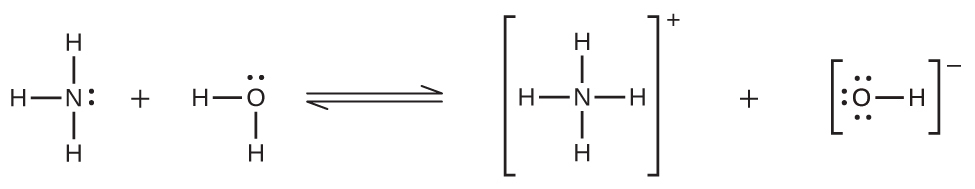

第11章 溶液とコロイド
図11.1 | ここに写っているパルミラ環礁国指定野生生物保護区のもののようなサンゴ礁は、地球の海の生態系に欠かせないものです。サンゴ礁とすべての海洋生物の健全さは、海水として知られる複雑な混合物の特定の化学組成に依存しています。(credit: modification of work by “USFWS – Pacific Region”/Wikimedia Commons)
この章の概要
11.1 溶解プロセス
11.2 電解質
11.3 溶解度
11.4 束一的性質
11.5 コロイド
はじめに
サンゴ礁には、全海洋生物種の約25%が生息しています。サンゴ礁は、気候変動、海洋酸性化、および水質汚染によって危機にさらされています。これらはすべて、海水として知られている溶液の組成を変化させます。海水中の溶解酸素は海の生物にとって死活的に重要ですが、海が暖かくなるにつれて酸素は溶けにくくなります。大気中の二酸化炭素濃度が高くなると、海洋中の二酸化炭素濃度も高くなり、海洋酸性化の原因となります。サンゴのポリプの外骨格は酸性の溶液に溶けるため、サンゴ礁は特に酸性化の影響を受けやすいです。人間は、農業排水やその他の形態の汚染によって海に影響を与えることで、海水の組成を変化させる原因となっています。
溶液は、生命を維持するためのプロセスや、化学反応を伴う他の多くのプロセスにとって重要なものです。この章では、溶液の性質について考察し、溶液が形成されるかどうかと、それがどのような性質を持つかを決定する要因を検討します。また、コロイド(典型的な溶液における分子やイオンよりも大きな分散粒子を含む混合物)の性質についても論じます。
11.1 溶解プロセス
この節が終わるまでに、あなたは次のことができるようになります:
•溶液の基本的な性質と、それらがどのように形成されるかを記述する
•成分の分子の性質に基づいて、与えられた混合物が溶液を生成するかどうかを予測する
•いくつかの溶液が形成されるときに熱を生成する、あるいは吸収する理由を説明する
この教科書の以前の章では、2つかそれ以上の物質の均一混合物として定義された溶液を紹介しました。しばしば、溶液の1つの成分が顕著に高い濃度で存在しており、その場合、それは溶媒と呼ばれます。比較的低い濃度で存在する溶液の他の成分は溶質と呼ばれます。砂糖は、スクロース分子(C₁₂H₂₂O₁₁)からなる共有結合性の固体です。この化合物が水に溶けると、その分子は水の分子の間に一様に分布するようになります:
\[ \rm C_{12}H_{22}O_{11}\ (s) ⟶ C_{12}H_{22}O_{11}\ (aq) \]
反応式の中の添え字「aq」は、スクロース分子が溶質であり、したがって、個別に水溶液全体にわたって分散していることを意味します(水は溶媒です)。スクロース分子は水分子よりも重いですが、それらは溶液全体にわたって分散したままであり、重力によって時間の経過とともにそれらが「沈殿」することはありません。
重クロム酸カリウムK₂Cr₂O₇は、無色のカリウムイオンK⁺とオレンジ色の重クロム酸イオンCr₂O₇²⁻からなるイオン化合物です。少量の固体の重クロム酸カリウムを水に加えると、この化合物は溶解して解離し、混合物全体にわたって一様に分布するカリウムイオンと重クロム酸イオンが得られます(図11.2)。これは、以下の反応式で示されます:
\[ \rm K_2 Cr_2 O_7\ (s) ⟶ 2K^+\ (aq) + Cr_2 {O_7}^{2−}\ (aq) \]
砂糖と水の混合物と同様に、この混合物も水溶液です。溶質であるカリウムイオンと重クロム酸イオンは、溶媒(水)分子の間に個別に分散したままです。
図11.2 | 重クロム酸カリウム(K₂Cr₂O₇)を水と混合すると、均一なオレンジ色の溶液になります。(credit: modification of work by Mark Ott)
学習へのリンク
このバーチャル実験室(http://openstaxcollege.org/l/16Phetsugar)を訪れて、一般的な共有結合性およびイオン性物質(砂糖と塩)の水への溶解のシミュレーションを見てください。
水は溶媒としてあまりにも頻繁に使用されるため、溶液という言葉は多くの人にとって水溶液を意味するようになっています。しかしながら、ほとんどすべての気体、液体、または固体が溶媒として機能することができます。多くの合金は、ある金属を別の金属に溶かした固溶体です。たとえば、米国の5セント硬貨には、銅の中に溶解したニッケルが含まれています。空気は気溶体であり、窒素、酸素、および他のいくつかの気体の均一混合物です。酸素(気体)、アルコール(液体)、砂糖(固体)はすべて水(液体)に溶解して液体状の溶液を形成します。表11.1は、いくつかの異なる溶液の例と、溶質と溶媒の相を示しています。
表11.1
溶液は次のような特徴を示します:
それらは均一です。溶液が混合された後は、すべての点にわたって組成が同じです(その組成は一様です)。
溶液の物理的状態(固体、液体、または気体)は、表11.1の例で示されているように、典型的には溶媒の状態と同じです。
溶液の成分は分子スケールで分散しています。それらは分離された溶質粒子(分子、原子、および/またはイオン)の混合物で構成されており、それぞれが溶媒種によって密接に取り囲まれています。
溶液中で溶解した溶質は、沈殿したり、溶媒から分離したりすることはありません。
溶液の組成、すなわちその成分の濃度は、(成分の溶解度によって決定される限度内で)連続的に変化させることができます(溶解度については、この章の後のほうで詳しく議論します)。
溶液の形成
溶液の形成は、自発過程の一例です。自発過程とは、何らかの外部の源からのエネルギーを必要とせずに、特定の条件下で発生するプロセスのことです。溶解過程を速めるために混合物を撹拌することもありますが、これは必ずしも必要ではありません。最終的には均一な溶液が形成されます。自発的な現象のトピックは、化学熱力学の学習にとって決定的に重要であり、この教科書の後の章でより詳細に扱われています。この章での議論の目的としては、溶液の自発的な形成に有利な(ただし、それを保証はしない)2つの基準を考えるだけで十分です:
系の内部エネルギーの減少(以前の熱化学の章で議論した発熱変化)
系内での物質の分散の増加(これは、後の熱力学の章で学ぶように、系のエントロピーの増加を示します)
溶解の過程では、熱が吸収されたり放出されたりすることで、内部エネルギーの変化が起こることがしばしばあります(常にではありません)。溶媒全体にわたる溶質分子の一様な分布から溶液が形成されるときには、物質の分散が常に増加します。
溶液中の溶質種と溶媒種の間の分子間引力の強さが、分離された成分として存在するときの強さと変わらない場合には、エネルギー変化を伴わずに溶液が形成されます。このような溶液は理想溶液と呼ばれます。理想気体の混合物(または理想的な振る舞いに近いヘリウムやアルゴンなどの気体)は理想溶液[気溶体]の一例です。なぜなら、これらの気体を構成する実体は大きな分子間引力を経験しないからです。
ヘリウムとアルゴンの容器を接続すると、気体は拡散により自然に混ざり合い、溶液[気溶体]を形成します(図11.3)。この溶液が形成されると、明らかに物質の分散が大きくなります。なぜなら、ヘリウムとアルゴンの原子が、混合前にそれぞれが占めていた体積の2倍の体積を占めるようになるからです。
図11.3 | ヘリウムとアルゴンの試料が自然に混ざりあって溶液[気溶体]を生成します。
構造的に似た液体を混合したときにも理想溶液ができることがあります。たとえば、アルコール類のメタノール(CH₃OH)とエタノール(C₂H₅OH)の混合物は理想溶液を形成し、炭化水素類のペンタン(C₅H₁₂)とヘキサン(C₆H₁₄)の混合物も理想溶液を形成します。図11.3に示される丸型容器の中にメタノールとエタノール、またはペンタンとヘキサンを配置すると、He気体とAr気体で観察されるのと同じ拡散とそれに続く混合がこれらの液体に対して起こり(ただし、かなり遅い速度で)、エネルギーに大きな変化のない溶液が得られます。しかしながら、気体の混合物とは異なり、これらの液体-液体溶液の成分は、実際には、分子間の引力を経験しています。しかし、混合される2つの物質の分子は構造的に非常に類似しているので、同じ分子の間と同じでない分子の間の分子間引力は本質的に同じであり、したがって、溶解プロセスは、相当量のエネルギーの増加または減少を伴うものではありません。これらの例は、増加した物質の分散のみによって、溶液の自発的な形成を引き起こすために必要な駆動力を提供することができる方法を説明しています。しかしながら、いくつかのケースでは、溶質種と溶媒種の間の分子間引力の相対的な大きさが溶解を妨げることがあります。
溶解プロセスには、溶質-溶質、溶媒-溶媒、溶質-溶媒の3種類の分子間引力が関係しています。図11.4に示されるように、溶液の形成は、溶質-溶質および溶媒-溶媒の引力を克服するためにエネルギーが消費され(吸熱過程)、溶質-溶媒の引力が確立されたときにエネルギーが放出される(溶媒和と呼ばれる発熱過程)という、段階的なプロセスとして見ることができます。これらの段階的プロセスに関連するエネルギー変化の相対的な大きさによって、溶解プロセス全体がエネルギーを放出するか吸収するかが決定されます。いくつかの場合では、溶質種と溶媒種を分離するのに必要なエネルギーが、溶媒和によって放出されるエネルギーよりもはるかに大きいため、 溶液が形成されません。
図11.4 | この溶解の模式図は、溶質種と溶媒種の吸熱的な分離(ステップ1と2)と発熱的な溶媒和(ステップ3)を含む段階的なプロセスを示しています。
イオン化合物が水に溶解する例を考えてみましょう。溶液の形成には、化合物のカチオンとアニオン(溶質-溶質)の間の静電力が完全に克服され、これらのイオンと水分子(溶質-溶媒)の間に引力が確立される必要があります。溶解する溶質を収容するためには、水分子のうち比較的小さな割合の水分子の間の水素結合もまた、克服されなければなりません。溶質の静電力が溶媒和力よりも著しく大きい場合、溶解プロセスは顕著に吸熱的であり、化合物は感知できるほどには溶解しないかもしれません。サンゴ礁の主要成分である炭酸カルシウムは、このような「不溶性」イオン化合物の一例です(図11.1参照)。一方、溶媒和力が化合物の静電力よりもはるかに強い場合には、溶解は著しく発熱的であり、その化合物は非常に溶解性が高いことがあります。このタイプのイオン化合物の一般的な例は、食卓塩としてよく知られている塩化ナトリウムです。
この節の冒頭で述べたように、発熱性の溶解プロセスによる自発的な溶液形成が起こりがちですが、それが保証されているわけではありません。多くの可溶性化合物は確かに熱を放出して溶解しますが、一部の化合物は吸熱的に溶解します。硝酸アンモニウム(NH₄NO₃)はそのような例の1つであり、図11.5に描かれるものような、怪我の手当のための瞬間冷却パックを作るために使用されています。水の入った薄膜のビニール袋が、NH₄NO₃固体の入った大きめの袋の中に封入されます。小さい方の袋が破られると、NH₄NO₃の溶液が形成され、周囲(パックが当てられる負傷部)からの熱を吸収し、冷湿布となって腫れを減少させます。このような吸熱的な溶解は、溶質に溶媒和が形成されるときに取り戻されるエネルギーよりも、溶質種を分離するために投入されるエネルギーのほうが大きい必要があります。しかし、それにもかかわらず、溶液の形成に伴う無秩序性の増加のために、それらの溶解は自発的な溶解です。
図11.5 | 硝酸アンモニウムのような特定の塩類が水に溶ける—吸熱過程—と、瞬間冷却パックが冷たくなります。
学習へのリンク
この短いビデオ (http://openstaxcollege.org/l/16endoexo) は、吸熱性および発熱性の溶解プロセスを説明しています。
11.2 電解質
この節が終わるまでに、あなたは次のことができるようになります:
•電解質を定義し、例を示す
•イオン性電解質と共有結合性電解質の溶解に伴う物理的変化と化学的変化を区別する
•電解質の強さと溶質-溶媒の引力を関係付ける
いくつかの物質が水に溶解しているとき、それらは溶液中にイオンを生成するような物理的または化学的変化のいずれかを経ます。これらの物質は、電解質と呼ばれる化合物の重要な分類を構成しています。溶解してもイオンが生じない物質は、非電解質と呼ばれます。イオンを発生させる物理的または化学的プロセスが実質的に100%効率的である場合(溶解した化合物のすべてがイオンを発生させる場合)、その物質は強電解質として知られています。溶解した物質のうち、イオンを生成するプロセスを経る割合が比較的少ない場合は、弱電解質と呼ばれます。
物質を含む水溶液の電気伝導度を測定することによって、物質を強電解質、弱電解質、または非電解質のいずれかに分類することができます。電気を通すためには、物質は自由に移動できる電荷を帯びた種を含んでいなければなりません。最もよく知られているのは、金属線を介した電気の伝導ですが、この場合、移動可能な電荷を帯びた実体は電子です。溶解したイオンを含む場合には溶液も電気を通すことができ、イオン濃度が高くなるにつれて導電性が高くなります。溶液に浸した電極に電圧をかけることで、溶解イオンの相対的な濃度を評価(電流の流れを測定することによって定量的に、あるいは回路に含まれる電球の明るさを観察することによって定性的に)することができます(図11.6)。
図11.6 | エタノールなどの非電解質の溶液には溶解イオンが含まれておらず、電気を通すことができません。電解質の溶液には電気を通すことのできるイオンが含まれています。電解質溶液の導電性は電解質の強さに関係しています。
イオン性電解質
図11.7に示されるように、水やその他の極性分子はイオンに引き寄せられます。イオンと双極子を持つ分子との間の静電引力は、イオン-双極子引力と呼ばれます。これらの引力は、イオン化合物の水への溶解において重要な役割を果たします。
図11.7 | 塩化カリウム(KCl)が水に溶けると、イオンは水和します。極性のある水分子は、K⁺イオンとCl⁻イオンの電荷によって引き寄せられます。イオンの前後の水分子は図示されていません。
イオン化合物が水に溶けると、固体中のイオンが分離して溶液全体にわたって一様に分散しますが、これは、水分子がイオンを取り囲んで溶媒和して、イオン間の強い静電力を減少させるためです。このプロセスは、解離として知られる物理的変化を表しています。ほとんどの条件下では、イオン化合物は溶解するとほぼ完全に解離するため、強電解質に分類されます。難溶性であっても、可溶性イオン化合物は強電解質となります。なぜなら、実際に溶解した少量の化合物は完全に解離するからです。
固体のKClを水に加えたときに、微視的なレベルで何が起こるかを考えてみましょう。イオン-双極子の力は、極性の水分子の正(水素)の端部を固体表面の負の塩化物イオンに引きつけ、負(酸素)の端部を正のカリウムイオンに引きつけます。図11.7が示すように、水分子は個々のK⁺イオンとCl⁻イオンを取り囲み、イオンをまとめて結合する強いイオン間力を減少させ、それらを溶媒和されたイオンとして溶液中に移動させます。静電引力を克服することによって、それぞれの水和イオンが希薄な溶液中で独立して動くことが可能になり、イオンは溶解していない化合物中での固定された位置から溶液中に広く分散した溶媒和イオンへと移行します。
共有結合性電解質
純水は、電気の伝導性が非常に悪いです。なぜなら、水はほんのわずかにしかイオン化しないからです(25°Cでは10億個の分子のうち約2個しかイオン化しません)。水は、ある水分子が別の水分子に陽子(H⁺イオン)を与えるとイオン化し、ヒドロニウムイオンと水酸化物イオンを生じさせます。
\[ \rm H_2 O\ (l) + H_2 O\ (l) ⇌ H_3 O^+\ (aq) + OH^−\ (aq) \]
いくつかのケースでは、共有結合化合物から調製された溶液は、溶質分子が溶媒と化学的に反応してイオンを生成するために、電気を通します。たとえば、純粋な塩化水素は、共有結合したHCl分子からなる気体です。この気体にはイオンは含まれていません。しかしながら、塩酸の水溶液は非常に良い導体であり、溶液中に相当な濃度のイオンが存在することを示しています。
HClは酸であるため、その分子は水と反応し、H⁺イオンを移動させて、ヒドロニウムイオン (H₃O⁺) と塩化物イオン (Cl⁻) を形成します:
この反応は、HClの場合、実質的に100%完全なものです(つまり、それは強酸であり、結果として強電解質です)。同様に、部分的にしか反応しない弱酸と弱塩基は、水に溶解したときには比較的低濃度のイオンを生成し、弱電解質として分類されます。読者の方は、この教科書の以前の反応分類と化学量論に関する章で与えられた強酸と弱酸についての議論を復習するとよいでしょう。
11.3 溶解度
この節が終わるまでに、あなたは次のことができるようになります:
•溶解度に対する温度と圧力の影響を記述する
•ヘンリーの法則を述べ、液体中の気体の溶解度を含む計算にそれを使用する
•液体-液体の溶液について可能な溶解度の程度を説明する
水の入ったコップに少量の砂糖を加え、すべての砂糖が溶けるまでかき混ぜ、その後、もう少し加えることを想像してみてください。あなたは、溶液の砂糖の濃度が自然な限度に達するまで、このプロセスを繰り返すことができます。その限度は、この章の前の2つの節で議論した溶質-溶質、溶質-溶媒、および溶媒-溶媒の引力の相対的な強さによって主に決定されます。溶液をどれだけ長時間撹拌しても、未溶解の砂糖が残っているため、あなたはこの限界に達したことを確信することができます。この時点での溶液中の砂糖の濃度は、溶解度として知られています。
特定の溶媒における溶質の溶解度とは、溶解プロセスが平衡にあるときに、所与の条件下で達成される最大濃度のことです。
溶質の濃度がその溶解度と等しいとき、その溶液はその溶質で飽和していると言われます。もし溶質の濃度がその溶解度よりも低い場合は、その溶液は飽和していないと言われます。比較的低い濃度の溶質を含む溶液は希薄であると言われ、比較的高い濃度の溶質を含む溶液は濃縮されていると言われます。
学習へのリンク
このインタラクティブなシミュレーション(http://openstaxcollege.org/l/16Phetsoluble)を使用して、さまざまな飽和溶液を調製してください。
溶質の濃度がその溶解度を超えるような溶液を作ることができます。このような溶液は過飽和と呼ばれ、非平衡状態の興味深い例です(この重要な概念については、この教科書の平衡に関する章で詳しく扱われています)。たとえば、開かれた容器に入っている、まだ「気が抜けていない」炭酸飲料は、二酸化炭素気体で過飽和の状態にあります。時間が経てば、CO₂濃度は溶解度に達するまで減少します。
学習へのリンク
過飽和溶液からの酢酸ナトリウムの沈殿を示すこの印象的なビデオ(http://openstaxcollege.org/l/16NaAcetate)を見てください。
液体中に気体がある溶液
どのような溶液でもそうですが、気体の液体への溶解度は、溶質種と溶媒種の間の分子間の引力による影響を受けます。しかしながら、固体および液体の溶質とは異なり、気体の溶質が液体の溶媒に溶解するときに克服する必要があるような、溶質-溶質の分子間引力はありません(図11.4を参照)。なぜなら、気体を構成する原子または分子は遠く離れており、無視できるほどの相互作用しか受けていないからです。その結果、溶質-溶媒の相互作用が溶解度に影響を与える唯一のエネルギー的要因となります。たとえば、酸素の水への溶解度はヘリウムの水への溶解度よりも約3倍大きいですが(水とより大きな酸素分子との間にはより大きな分散力があります)、クロロメタン(CHCl₃)の溶解度の100分の1未満です(極性のクロロメタン分子は極性の水分子に対して双極子-双極子引力を受けます)。同様に、酸素のヘキサン (C₆H₁₄) への溶解度は水への溶解度の約20倍であることに注意してください。なぜなら、酸素とより大きなヘキサン分子との間にはより大きな分散力が存在するからです。
温度は溶解度に影響を与えるもう1つの要因であり、温度が上昇すると気体の溶解度は通常は低下します(図11.8)。温度と溶解している気体の濃度との間にあるこの逆相関の関係が、自然の水の熱汚染の大きな影響のうちの1つの原因となっています。
図11.8 | 水に溶解している気体の溶解度は、温度が高くなるにつれて減少します。すべての溶解度は、溶液の上の気体が101.3kPa(1atm)の一定圧力になるようにして測定されました。
河川、湖沼、渓流の温度が上昇すると、水の中への酸素の溶解度が低下します。溶解酸素レベルの低下は、水中の生態系の健全性に重大な影響を及ぼす可能性があり、深刻な場合には大規模な魚の死につながることがあります(図11.9)。
図11.9 | (a)この冷水の入ったグラスの中の小さな気泡は、水が室温まで温まり、溶解している空気の溶解度が低下したときに形成されたものです。(b)熱汚染を受けた自然の水において酸素の溶解度が低下することで、大規模な魚の死が発生することがあります。(credit a: modification of work by Liz West; credit b: modification of work by U.S. Fish and Wildlife Service)
気体状の溶質の溶解度は、溶液がさらされる気体の中での溶質の分圧にも影響されます。気体の溶解度は、気体の圧力が高くなるにつれて増加します。炭酸飲料は、この関係性をよく表す例を与えてくれます。炭酸化工程では、飲料を比較的高い圧力の二酸化炭素ガスにさらし、次いで飲料容器を密閉して、この圧力で飲料をCO₂により飽和させます。飲料容器を開けるときには、二酸化炭素ガスの圧力が解放されておなじみのプシュッ!という音が聞こえるとともに、溶解した二酸化炭素の一部が典型的には小さな気泡の形で溶液から出てくるのが見えます(図11.10)。この時点では、飲料は二酸化炭素で過飽和状態にあり、時間の経過とともに溶解二酸化炭素濃度は平衡値まで低下し、飲料は「気が抜けます」。
図11.10 | 炭酸飲料のボトルを開けると、飲料の上にある気体状の二酸化炭素の圧力が低下します。そのため、CO₂の溶解度が低下し、溶解した二酸化炭素の一部が小さな気泡となって溶液から出ていく様子が見られます。(credit: modification of work by Derrick Coetzee)
多くの気体状の溶質の場合、溶解度Cgと分圧Pgの関係は比例的なものです:
\[ C_{\rm g} = kP_{\rm g} \]
ここでkは気体状の溶質と溶媒の種類、および溶液の温度に依存する比例定数です。これはヘンリーの法則を数学的に述べたものです:ヘンリーの法則とは、一定の体積の液体に溶解する理想気体の量は、気体の圧力に正比例する、というものです。
例題11.1 ヘンリーの法則の応用
温度が20 °Cであり、101.3kPaの分圧で気体状の酸素にさらされた水の中での溶解酸素濃度は、1.38 × 10⁻³mol L⁻¹です。ヘンリーの法則を用いて、酸素の分圧が地球大気中の酸素のおおよその圧力である20.7kPaのときの酸素の溶解度を決定してください。
解法
ヘンリーの法則によれば、理想溶液の場合、気体の溶解度Cg(この場合は 1.38 × 10⁻³mol L⁻¹)は、溶液の上にある未溶解の気体の圧力Pg(この場合は 101.3 kPa)に正比例します。CgとPgの両方が既知であるため、この関係を並べ替えてkについて解くために使用することができます。
\[ C_{\rm g} = kP_{\rm g}\\ k =\frac{C_{\rm g}}{P_{\rm g}}=\rm \frac{1.38 × 10^{−3}\ mol\ L^{-1}}{101.3\ kPa}= 1.36 × 10^{−5}\ mol\ L^{−1}\ kPa^{−1} \]
今度は、kを使って低圧での溶解度を求めます。
\[ \begin{eqnarray} C_{\rm g} &=& kP_{\rm g}\\ &=& \rm 1.36 × 10^{−5}\ mol\ L^{−1}\ kPa^{−1} × 20.7\ kPa\\ &=& \rm 2.82 × 10^{−4}\ mol\ L^{−1} \end{eqnarray} \]
このような種類の計算に関与する量を表現するためにさまざまな単位が使用されることに注意してください。次元解析の制約に従う単位の組み合わせであれば、どのようなものでも構いません。
学習内容の確認
0°Cの水の試料100.0 mLを152 torrの気体状の溶質を含む雰囲気にさらすと、1.45×10⁻³gの溶質が溶解しました。この気体状の溶質の圧力が760torrのときの溶解度をヘンリーの法則を用いて決定してください。
解答:100.0 mLの中に7.25 × 10⁻³g、または0.0725 g/L
例題11.2 熱汚染と酸素溶解度
ある種の淡水のマスは、溶解酸素濃度7.5mg/Lを必要とします。熱に汚染された山間の渓流(水温30.0°C、大気中の酸素分圧0.17atm)では、この魚は生存できるでしょうか?図11.8のデータを使用して、この温度でのヘンリーの法則の定数の値を推定してください。
解法
まず、30.0 °Cという指定された温度での水の中の酸素のヘンリーの法則の定数を計算します(図11.8は、この温度での溶解度が約1.2 mol/Lであることを示しています)。
\[ k =\frac{C_{\rm g}}{P_{\rm g}}= \rm 1.2 × 10^{−3}\ mol/L/1.00\ atm = 1.2 × 10^{−3}\ mol/L\ atm \]
次に、このkの値を使用して、指定された酸素分圧0.17 atmでの酸素溶解度を計算します。
\[ C_{\rm g} = kP_{\rm g} = {\rm (1.2 × 10^{−3}\ mol/L\ atm)(0.17\ atm) = 2.0 × 10^{−4}\ mol/L} \]
最後に、この溶解酸素濃度をmol/Lからmg/Lに変換します。
\[ \rm (2.0 × 10^{−4}\ mol/L)(32.0\ g/1\ mol)(1000\ mg/g) = 6.4\ mg/L \]
この濃度は7.5mg/Lの必要最小値よりも低いので、これらのマスは汚染された渓流では生存しない可能性が高いでしょう。
学習内容の確認
上記の渓流が通常の夏場の気温である15°Cに戻ったとき、その溶解酸素濃度は何になると予想されますか?
解答:8.2 mg/L
日常生活の中の化学
減圧症または「潜水病」
減圧症(DCS)、または「潜水病」は、スキューバダイバーがかなりの深さの水中を泳いでいるときに吸い込む空気の圧力が上昇していることによる影響です。ダイバーは、大気によってかかる圧力に加えて、自分の上にある水による追加の圧力も受けるため、水深10mごとに約1atmの圧力上昇を経験します。そのため、水中にいる際にダイバーが吸い込んだ空気には、対応した高い周囲の圧力での気体が含まれており、ダイバーの血液中に溶解した気体の濃度はそれに比例して高くなります(ヘンリーの法則にしたがって)。
ダイバーが水面に浮上すると、周囲の圧力が低下し、溶解している気体は溶解しにくくなります。もし浮上があまりにも速すぎると、ダイバーの血液から逃れた気体が泡となり、発疹や関節の痛みから麻痺、死亡に至るまでさまざまな症状を引き起こす可能性があります。DCSを回避するためには、ダイバーは比較的ゆっくりとした速度(10～20m/分)で浮上するか、あるいは、浮上中に所定の深度で数分間停止する減圧停止を何度か行わなければなりません。これらの予防策が効かない場合には、DCSとなったダイバーは、しばしば減圧室(または再与圧室)と呼ばれる加圧容器内で高圧酸素療法を受けます(図11.11)。
図11.11 | (a)再与圧室で訓練を受けるアメリカ海軍の潜水士。(b)高圧酸素療法を受けるダイバー。
気体状の溶質と溶媒との間で化学反応が起こるときには、ヘンリーの法則からの逸脱が観察されます。したがって、たとえば、アンモニアの水への溶解度は、圧力が高くなるにつれて、ヘンリーの法則で予想されるよりも急速に増加します。なぜなら、アンモニアは塩基であり、水とある程度反応してアンモニウムイオンや水酸化物イオンを形成するからです。

気体は過飽和溶液を形成することができます。液体中に気体がある溶液を低温または加圧下(またはその両方)で調製した場合、その後に溶液が温まったり、気体の圧力が低下したりすると、溶液が過飽和状態になることがあります。1986年、カメルーンで、火山の火口にある深い湖であるニオス湖(図11.12)からほぼ確実に二酸化炭素と考えられているガスの雲が噴出し、1700人以上の人が亡くなりました。ニオス湖の底の水は、湖の下の火山活動によって二酸化炭素で飽和しています。そして、湖の下から徐々に加熱されることで湖にターンオーバー[水の上下の移動]が起きて、二酸化炭素で飽和した温かくて密度の低い水が表面に到達したと考えられています。その結果、大量の溶解したCO₂が放出され、空気よりも密度の高い無色の気体が湖の下の渓谷を流れ落ち、渓谷に住む人間や動物が窒息死しました。
図11.12 | (a)1986年にカメルーンのニオス湖付近で1700人以上の死者を出した災害は、湖から大量の二酸化炭素の気体が放出されたためと考えられています。(b)その後、ゆっくりと制御されたやり方で湖から気体を排出し、将来同じような大惨事が起こらないようにするために、CO₂排出口が設置されました。(credit a: modification of work by Jack Lockwood; credit b: modification of work by Bill Evans)
液体中に液体がある溶液
液体の中には、どのような割合で混合しても溶液を得ることができるものがあります。言い換えると、それらは無限の相互溶解度を有し、混和性があると言われます。エタノール、硫酸、エチレングリコール(図11.13に写っているように、不凍液としてよく使われています)は、水と完全に混和性のある液体の例です。二輪用モーターオイルはガソリンと混和性があり、これらの混合物は各種の屋外動力機器(チェーンソー、リーフブロワーなど)の潤滑燃料として使用されています。
図11.13 | 水と不凍液は混和性があり、両者の混合物はすべての割合で均一です。(credit: “dno1967”/Wikimedia commons)
混和性のある液体とは、典型的には非常に類似した極性を持つ液体のことです。たとえば、極性を持っていたり、水素結合が可能な液体のことを考えてみましょう。このような液体の場合、溶質分子と溶媒分子の双極子-双極子引力(または水素結合)は、少なくとも純粋な溶質中の分子や純粋な溶媒中の分子の間の力と同じくらい強いです。したがって、2種類の分子は容易に混ざり合います。同様に、非極性の液体は、お互いに混和性です。なぜなら、溶質-溶質、溶媒-溶媒、および溶質-溶媒間の分子間の引力の強さに大きな違いがないからです。極性分子の極性溶媒での溶解度や、非極性分子の非極性溶媒での溶解度は、やはり、化学の格言である「似たものは似たものを溶解させる」を例示するものです。
感知できるほどには混ざり合わないような2つの液体は、非混和性と呼ばれます。非混和性の液体を同じ容器に注ぐと、別々の層が形成されます。ガソリン、油(図11.14)、ベンゼン、四塩化炭素、一部の塗料、その他多くの非極性の液体は、水とは非混和性です。極性の水分子と非極性の液体分子の間の比較的弱い引力は、水分子間のはるかに強い水素結合を克服するのに十分ではありません。非混和性と混和性の区別は実際には程度の問題であり、混和性のある液体は無限の相互溶解度を持ち、非混和性と言われる液体は(ゼロではないものの)非常に低い相互溶解度を持っています。
図11.14 | 水と油は非混和性です。この2つの物質の混合物は、密度の低い油が水の上に浮いている状態で、2つの別々の層を形成します。(credit: “Yortw”/Flickr)
臭素と水のようなほどほどの相互溶解度を持つ2つの液体は、部分的に混和性があると言われます。部分的に混和性のある2つの液体は、通常、混合したときに2つの層を形成します。臭素と水の混合物の場合、上層は臭素で飽和した水であり、下層は水で飽和した臭素です。臭素は非極性であるため、水にはあまり溶けず、水の層は溶解した明るいオレンジ色の臭素によってわずかに変色しています。臭素の中への水の溶解度は非常に低いので、臭素層の濃い色には目立った影響はありません (図11.15)。
図11.15 | 臭素(左側の濃いオレンジ色の液体)と水(中央の透明な液体)は部分的に混和性があります。右側の混合物の上層は水の中での臭素の飽和溶液であり、下層は臭素の中での水の飽和溶液です。(credit: Paul Flowers)
液体中に固体がある溶液
図11.16の溶解度曲線には、いくつかの固体の水の中での溶解度の温度依存性が示されています。これらのデータを見てみると、温度とともに溶解度が上昇する一般的な傾向を示していることがわかります(ただし、イオン化合物である硫酸セリウムのように例外もあります)。
図11.16 | このグラフは、いくつかの固体の溶解度が温度によってどのように変化するかを示しています。
溶解度の温度依存性を利用して、特定の化合物の過飽和溶液を調製することができます。溶液を高温(溶質がより溶解しやすい温度)で化合物によって飽和させた後、溶質を析出させずに低温まで冷却できることがあります。結果として生じる溶液は、低温での平衡溶解度よりも高い濃度の溶質を含んでおり(すなわち、過飽和状態)、比較的安定しています。余分な溶質の沈殿は、種結晶を加えることによって(この節の以前の学習へのリンクのビデオを参照してください)、または溶液を機械的に撹拌することによって開始することができます。図11.17に写っているもののようなハンドウォーマーの中には、この振る舞いを利用したものもあります。

図11.17 | このハンドウォーマーは、過飽和溶液中の酢酸ナトリウムが沈殿するときに熱を発生させます。溶質の沈殿は、溶液中の柔軟な金属円盤がカチッと音を立てて機械的な衝撃波が発生することで開始します。(credit: modification of work by “Velela”/Wikimedia Commons)
学習へのリンク
このビデオ(http://openstaxcollege.org/l/16handwarmer)は、ハンドウォーマーの中で起こる結晶化プロセスを示しています。
11.4 束一的性質
この節が終わるまでに、あなたは次のことができるようになります:
•モル分率と質量モル濃度を使用して、溶液成分の濃度を表現する
•溶質濃度が溶液のさまざまな性質(蒸気圧、沸点、凝固点、浸透圧)に及ぼす影響を記述する
•これらのさまざまな束一的効果を記述した数学的な方程式を使って計算を行う
•蒸留のプロセスとその実用的な応用について記述する
•浸透のプロセスを説明し、それが工業的および自然界でどのように応用されているかを記述する
溶液の性質は、純粋な溶質または溶媒の性質とは異なります。多くの溶液の性質は、溶質の化学的同一性に依存します。純水に比べて、塩化水素の溶液はより酸性であり、アンモニアの溶液はより塩基性であり、塩化ナトリウムの溶液はより密度が高く、スクロースの溶液はより粘度が高いです。しかしながら、溶質種の同一性に関係なく、溶質種の総濃度にのみ依存するような溶液の性質がいくつかあります。これらの束一的性質には、蒸気圧の降下、沸点の上昇、凝固点の降下、浸透圧などがあります。この節で説明するように、これらの性質の小さな組は、多くの自然現象や技術的応用にとって中心的な重要性を持っています。
モル分率と質量モル濃度
溶液成分の濃度を表すために一般的に使用されているいくつかの単位は、この教科書の以前の章で紹介しました。それぞれの単位は、さまざまな用途で使用するために一定の利点を提供します。たとえば、モル濃度(M)は、溶質種のモル量の観点で定義されているため、化学量論的な計算に使うのに便利な単位です:
\[ M =\rm \frac{mol\ 溶質}{L\ 溶液} \]
溶液の体積は温度によって変化するため、モル濃度も同様に変化します。モル濃度として表される場合、同数の溶質種と溶媒種を持つ溶液は、温度が異なるときには溶液の収縮/膨張により濃度が異なるものになります。多くの束一的性質を含む計算のためには、値が温度に依存しないモルベースの濃度単位がより適切です。このような単位の2つは、モル分率(以前の気体の章で紹介しました)と質量モル濃度です。
ある成分のモル分率Xは、そのモル量とすべての溶液成分のモル数の合計との比率です:
\[ X_{\rm A} =\frac{\rm mol\ A}{すべての成分の総モル} \]
この定義では、すべての溶液成分(溶媒とすべての溶質)のモル分率の和は1に等しいです。
質量モル濃度は、溶媒の質量に対する溶質のモル数の比率として定義され、キログラムで表される濃度単位です:
\[ m = \frac{\rm mol\ 溶質}{\rm kg\ 溶媒} \]
これらの単位は質量とモル量のみを使用して計算されるため、温度によって変化することはありません。したがって、それらは、この章の節で説明していくように、いくつかの束一的性質を含む温度に依存しない濃度を必要とする応用に適しています。
例題11.3 モル分率と質量モル濃度を計算する
ほとんどの自動車のラジエーターの不凍液は、等しい体積のエチレングリコールと水の混合物であり、腐食を防ぐための他の添加剤が少量含まれています。2.22 × 10³gのエチレングリコールと2.00 × 10³gの水(約2Lのグリコールと2Lの水)から調製した溶液中のエチレングリコールC₂H₄(OH)₂の(a)モル分率と(b)質量モル濃度は何ですか?
解法
(a)エチレングリコールのモル分率は、まず溶液の両方の成分のモル量を求め、これらの量をモル分率の定義に代入することにより算出することができます:
\[ \begin{array}{ll} {\rm mol\ C_2 H_4 (OH)_2 = 2.22×10^3\ g ×\frac{1\ mol\ C_2 H_4 (OH)_2}{62.07\ g\ C_2 H_4 (OH)_2}= 35.8\ mol\ C_2 H_4 (OH)_2}\\ {\rm mol\ H_2 O = 2.00×10^3\ g ×\frac{1\ mol\ H_2 O}{18.02\ g\ H_2 O}= 111\ mol\ H_2 O}\\ X_{エチレングリコール} =\rm \frac{35.8\ mol\ C_2 H_4 (OH)_2}{(35.8 + 111)\ mol\ total}= 0.244\\ \end{array} \]
モル分率は、同一の単位(モル)を持つ性質の比率であるため、無次元の性質であることに注意してください。
(b)溶質のモルと溶媒の質量(kg)を求めます。
まず、与えられたエチレングリコールの質量とそのモル質量を使って、溶質のモルを求めます:
\[ \rm 2.22×10^3\ g\ C_2 H_4 (OH)_2\left(\frac{mol\ C_2 H_4 (OH)_2}{62.07\ g}\right)= 35.8\ mol\ C_2 H_4 (OH)_2 \]
次に、水の質量をグラムからキログラムに変換します:
\[ \rm 2.00×10^3\ g\ H_2 O\left(\frac{1\ kg}{1000\ g}\right)= 2.00\ kg\ H_2 O \]
最後に、その定義に従って質量モル濃度を計算します:
\[ \begin{eqnarray} 質量モル濃度 &=&\frac{\rm mol\ 溶質}{\rm kg\ 溶媒}\\ 質量モル濃度 &=&\frac{\rm 35.8\ mol\ C_2 H_4 (OH)_2}{\rm 2\ kg\ H_2 O}\\ 質量モル濃度 &=& 17.9\ m \end{eqnarray} \]
学習内容の確認
0.850 g のアンモニア(NH₃)を 125 g の水に溶解させた溶液のモル分率と質量モル濃度は何ですか?
解答:7.14 × 10⁻³、0.399 m
例題11.4 モル分率と質量モル濃度を変換する
塩化ナトリウムの3.0m溶液中の溶質と溶媒のモル分率を計算してください。
解法
ある濃度の単位から別の濃度の単位に変換するには、まず、2つの単位の定義を比較することによって行います。ここでの場合、両方の単位の分子(溶質のモル)は同じですが、分母が異なります。提供されている質量モル濃度は、以下のように書くことができます:
\[ \rm \frac{3.0\ mol\ NaCl}{1\ kg\ H_2 O} \]
したがって、この溶液のモル分率の分子は、3.0mol NaClです。分母は、1.0kgの水に対応する水のモル量を求めることによって計算することができます。
\[ \rm 1.0\ kg\ H_2 O \left(\frac{1000\ g}{1\ kg}\right)\left(\frac{mol\ H_2 O}{18.02\ g}\right)= 55\ mol\ H_2 O \]
そして、これらのモル量をモル分率の定義に代入します。
\[ \begin{eqnarray} X_{\rm H_2 O} &=&\frac{\rm mol\ H_2 O}{\rm mol\ NaCl + mol\ H_2 O}\\ X_{\rm H_2 O} &=&\frac{\rm 55\ mol\ H_2 O}{\rm 3.0\ mol\ NaCl + 55\ mol\ H_2 O}\\ X_{\rm H_2 O} &=& 0.95\\ X_{\rm NaCl} &=&\frac{\rm mol\ NaCl}{\rm mol\ NaCl + mol\ H_2 O}\\ X_{\rm NaCl} &=&\frac{\rm 3.0\ mol\ NaCl}{\rm 3.0\ mol\ NaCl + 55\ mol\ H_2 O}\\ X_{\rm NaCl} &=& 0.052\\ \end{eqnarray} \]
学習内容の確認
ジクロロメタン(CH₂Cl₂)に溶解したヨウ素I₂のモル分率が0.115でした。この溶液中のヨウ素の質量モル濃度mは何ですか?
解答:1.50 m
例題11.5 質量モル濃度とモル濃度の変換
手術後の回復療法の一部として、0.556 Mのグルコース水溶液(密度1.04g/mL)を静脈内に注入することがあります。この溶液中のグルコースの質量モル濃度は何ですか?
解法
与えられたモル濃度は、以下のように明示的に記述することができます:
\[ M = {\rm 0.556\ mol\ グルコース/1\ L\ 溶液} \]
質量モル濃度の定義を考えてみましょう:
\[ m = {\rm mol\ 溶質/kg\ 溶媒} \]
この溶液の1Lの中に含まれるグルコースの量は0.556molなので、溶液のこの体積の中に含まれる水の質量が必要とされます。
まず、この溶液の1.00 Lの質量を計算します:
\[ {\rm (1.0\ L\ 溶液)(1.04\ g/mL)(1000\ mL/1\ L)(1\ kg/1000\ g) = 1.04\ kg\ 溶液} \]
これは水とその溶質であるグルコースの両方の質量なので、グルコースの質量を引かなければなりません。グルコースのモル量からグルコースの質量を計算します:
\[ {\rm (0.556\ mol\ グルコース)(180.2\ g/1\ mol) = 100.2\ g\ または\ 0.1002\ kg} \]
グルコースの質量を引くと、溶液中の水の質量が得られます:
\[ {\rm 1.04\ kg\ 溶液 − 0.1002\ kg\ グルコース = 0.94\ kg\ 水} \]
最後に、この溶液中のグルコースの質量モル濃度を以下のように計算します:
\[ m = {\rm 0.556\ mol\ グルコース/0.94\ kg\ 水} = 0.59\ m \]
学習内容の確認
硝酸HNO₃(aq)は、33.7 mの水溶液(密度=1.35 g/mL)として市販されています。この溶液のモル濃度は何ですか?
解答:14.6 M
蒸気圧降下
液体と固体の章で説明されているように、液体の平衡蒸気圧は、蒸発と凝縮が等速で発生しているときに、その気相によって与えられる圧力のことです:
\[ 液体 ⇌ 気体 \]
揮発性の液体に不揮発性の物質を溶解させると、液体の蒸気圧が降下します。この現象は、添加された溶質分子が液体の蒸発・凝縮過程に及ぼす影響を考慮することによって合理的に説明することができます。蒸発するためには、溶液の表面に溶媒分子が存在しなければなりません。溶質が存在すると、溶媒分子が利用することのできる表面積が減少し、それによって溶媒の蒸発の速度が低下します。凝縮の速度は溶質の存在によっては影響を受けないので、正味の結果は、気相中の溶媒分子がより少ない(すなわち蒸気圧がより低い)状態で蒸発-凝縮平衡が達成されることになります(図11.18) 。この解釈は有用ではありますが、蒸気圧降下という束一的性質のいくつかの重要な側面を説明するものではありません。より厳密な説明にはエントロピーの性質が関わってきますが、そのトピックは後の熱力学の章で議論します。液体の蒸気圧が降下することを理解するという目的のためには、(溶媒相と溶質相が分かれている場合と比べると)溶液の中では物質がより分散しているという性質が、溶媒分子を効果的に安定化させ、蒸発を妨げる役割を果たしている、ということに留意しておくのが適切です。この節の次の項で説明するように、その結果として蒸気圧が低くなり、それに応じて沸点が高くなります。
図11.18 | 不揮発性の溶質の存在は、溶媒分子の蒸発を妨げることで溶液の蒸気圧を降下させます。
溶液成分の蒸気圧とその成分の濃度との間の関係性は、ラウールの法則によって記述されます:ラウールの法則とは、理想溶液の任意の成分によって与えられる分圧は、純粋な成分の蒸気圧に溶液中のモル分率を乗じたものに等しい、というものです。
\[ P_{\rm A} = X_{\rm A} P_{\rm A}^* \]
ここで、PAは溶液中の成分Aによって与えられる分圧であり、PA*は純粋なAの蒸気圧であり、XAは溶液中のAのモル分率です。
気体混合物の合計の圧力は、その全成分の分圧の和に等しいこと(分圧についてのドルトンの法則)を思い出すと、i個の成分を含む溶液によって及ぼされる全蒸気圧は以下のようになります。
\[ P_{溶液} = \sum\limits_{i}{P _i} = \sum\limits_{i}{X_i P_i^*} \]
不揮発性物質とは、その蒸気圧が無視できる程度(P*≈0)のものであり、したがって、不揮発性溶質のみを含む溶液の上の蒸気圧は、溶媒のみに起因しています:
\[ P_{溶液} = X_{溶媒} P_{溶媒}^* \]
例題11.6 蒸気圧を計算する
92.1gのグリセリンC₃H₅(OH)₃と184.4gのエタノールC₂H₅OHを含む理想溶液の40 °Cにおける蒸気圧を計算してください。純粋なエタノールの蒸気圧は40 °Cで0.178atmです。グリセリンはこの温度では基本的に不揮発性です。
解法
溶媒はこの溶液の唯一の揮発性成分であるため、その蒸気圧はラウールの法則に従って以下のように計算することができます:
\[ P_{溶液} = X_{溶媒} P_{溶媒}^* \]
まず、与えられた質量のデータを用いてそれぞれの溶液成分のモル量を算出します。
\[ \rm 92.1\ g\ C_3 H_5 (OH)_3 ×\frac{1\ mol\ C_3 H_5 (OH)_3}{92.094\ g\ C_3 H_5 (OH)_3}= 1.00\ mol\ C_3 H_5 (OH)_3\\ 184.4\ g\ C_2 H_5 OH ×\frac{1\ mol\ C_2 H_5 OH}{46.069\ g\ C_2 H_5 OH}= 4.000\ mol\ C_2 H_5 OH \]
次に、溶媒(エタノール)のモル分率を計算し、ラウールの法則を用いて溶液の蒸気圧を計算します。
\[ X_{\rm C_2 H_5 OH} =\frac{\rm 4.000\ mol}{(\rm 1.00\ mol + 4.000\ mol)}= 0.800\\ P_{溶液} = X_{溶媒} P_{溶媒}^* = \rm 0.800 × 0.178\ atm = 0.142\ atm \]
学習内容の確認
ある溶液は、5.00 g の尿素CO(NH₂)₂(不揮発性溶質)と、0.100 kg の水を含んでいます。25°Cでの純水の蒸気圧が23.7torrであるとすると、理想的な振る舞いを仮定したときのこの溶液の蒸気圧は何ですか?
解答:23.4 torr
溶液の蒸留
蒸気圧が著しく異なる成分を持つ溶液は、蒸留として知られる選択的な蒸発プロセスによって分離されることがあります。AとBという2つの揮発性の液体の混合物という単純なケースを考えてみましょう。ここで、Aはより揮発性の液体です。ラウールの法則を使って、溶液の上の蒸気には成分Aが濃く含まれていること、すなわち、蒸気中のAのモル分率が液体中のAのモル分率よりも大きいことを示すことができます(章末の練習問題65を参照)。混合物を適切に加熱することによって、成分Aは蒸発し、凝縮し、回収され、効率的に成分Bから分離されます。
蒸留は、実験室と工業的な環境の両方で広く応用されており、石油の精製、発酵生成物の単離、水の浄化などに使用されています。実験室規模の蒸留のための典型的な装置が図11.19に示されています。
図11.19 | 典型的な実験室での蒸留装置が、(a)写真と(b)構成要素の模式図で示されています。(credit a: modification of work by “Rifleman82”/Wikimedia commons; credit b: modification of work by “Slashme”/Wikimedia Commons)
石油精製所では、原油の成分を分離するために大規模な分留蒸留を行っています。原油は、背の高い分留塔の底部で高温に加熱され、多くの成分を蒸発させ、その成分は塔内を上昇します。蒸発した成分が上昇中に適切な冷却区域に達すると、それらは凝縮し、回収されます。回収された液体は、図11.20に示されているように、炭化水素と他の石油化合物のより単純な混合物であり、それらはさまざまな用途(たとえば、ディーゼル燃料、灯油、 ガソリン)に適した組成を持っています。

図11.20 | 原油は複雑な混合物であり、大規模な分留によって分離されて、さまざまな単純な混合物を単離します。
沸点上昇
液体と固体の章で述べたように、液体の沸点とは、その蒸気圧が周囲の大気圧と等しくなるような温度のことです。溶液の蒸気圧は不揮発性の溶質の存在によって低下するため、結果として溶液の沸点が高くなるのは理にかなっています。蒸気圧は温度とともに上昇するため、溶液は、任意の蒸気圧(周囲の大気のものと同等の蒸気圧を含む)を得るためには、純粋な溶媒が必要とするものよりも高い温度を必要とします。不揮発性の溶質が溶媒に溶解したときに観測される沸点の上昇ΔTbは、沸点上昇と呼ばれ、溶質種の質量モル濃度に正比例します:
\[ ΔT_{\rm b} = K_{\rm b} m \]
ここで、Kbは沸点上昇定数であり、mは全溶質種の質量モル濃度です。
沸点上昇定数は、溶媒の化学的同一性に依存する特徴的な性質です。いくつかの溶媒のKbの値が表11.2に挙げられています。
表11.2
どの程度だけ溶媒の蒸気圧が低下し、沸点が上昇するかは、粒子の質量や大きさ、化学的同一性ではなく、所定量の溶媒中に存在する溶質粒子の総数に依存します。スクロース(342g/mol)の1m水溶液とエチレングリコール(62g/mol)の1m水溶液は、それぞれの溶液が溶媒1キログラムあたり1モルの溶質粒子(分子)を持っているため、同じ沸点を示します。
例題11.7 溶液の沸点を計算する
理想溶液の振る舞いを仮定すると、ベンゼンの中に不揮発性溶質を含む0.33m溶液の沸点は何ですか?
解法
沸点上昇と溶質の質量モル濃度の関係式を用いて、この問題を2つのステップで解きます。
ステップ1.沸点の変化を計算します。
\[ ΔT_{\rm b} = K_{\rm b} m = {\rm 2.53\ °C}m^{−1} × 0.33\ m = {\rm 0.83\ °C} \]
ステップ2.純粋な溶媒の沸点に沸点上昇を加えます。
\[ 沸点 = \rm 80.1\ °C + 0.83\ °C = 80.9\ °C \]
学習内容の確認
理想溶液の振る舞いを仮定すると、例題11.3で記述された不凍液の沸点は何ですか?
解答:109.2 °C
例題11.8 ヨウ素溶液の沸点
ヨウ素が不揮発性であり、溶液が理想的であると仮定して、800.0gのクロロホルム(CHCl₃)の中に92.1gのヨウ素(I₂)が入った溶液の沸点を求めてください。
解法
この問題を解くための4つのステップのアプローチを以下に概説します。
ステップ 1.単位変換係数でI₂のモル質量を使用して、I₂のグラムからモルに変換します。
結果:0.363 mol
ステップ2.溶質のモル数と溶媒の質量(キログラム単位)から、溶液の質量モル濃度を決定します。
結果:0.454 m
ステップ3.沸点の変化量と質量モル濃度の正比例を用いて、沸点がどれだけ変化するかを決定します。
結果:1.65 °C
ステップ4.純粋な溶媒の沸点と沸点の変化から新しい沸点を決定します。
結果:62.91 °C
それぞれの結果を自己評価として確認します。
学習内容の確認
47.8 g の水の中に1.0 g のグリセリン C₃H₅(OH)₃が入っている溶液の沸点は何ですか?理想溶液を仮定してください。
解答:100.12 °C
凝固点降下
溶液は純粋な液体よりも低温で凍結します。この現象は、道路や歩道の氷を溶かすために塩(図11.21)、塩化カルシウム、尿素などを使用する「除氷」作業や、自動車のラジエーターの「不凍液」としてエチレングリコールを使用する際に利用されています。海水は真水よりも低い温度で凍結するため、北極や南極の海は0°Cを下回る温度であっても凍結しません(これらの海に生息する魚や他の冷血性の海獣の体液も同様です)。
図11.21 | 岩塩(NaCl)、塩化カルシウム(CaCl₂)、またはこれらの混合物が氷を溶かすのに使われています。(credit: modification of work by Eddie Welker)
純粋な溶媒の凝固点と比べたときの希薄溶液の凝固点の低下ΔTfは凝固点降下と呼ばれ、溶質の質量モル濃度に正比例します。
\[ ΔT_{\rm f} = K_{\rm f} m \]
ここでmは溶質の質量モル濃度、Kfは凝固点降下定数と呼ばれます。沸点上昇定数と同様に、これらの値は溶媒の化学的同一性に依存する特徴的な性質です。いくつかの溶媒のKfの値が表11.2に挙げられています。
例題11.9 溶液の凝固点の計算
理想溶液の振る舞いを仮定すると、例題11.7に記載されたベンゼンの中に不揮発性の非電解質溶質を含む0.33 m溶液の凝固点は何ですか?
解法
凝固点降下と溶質の質量モル濃度の関係式を用いて、この問題を2つのステップで解きます。
ステップ1. 凝固点の変化を計算します。
\[ ΔT_{\rm f} = K_{\rm f} m = {\rm 5.12\ °C}m^{−1} × 0.33\ m = {\rm 1.7\ °C} \]
ステップ2. 純粋な溶媒の凝固点から求められた凝固点の変化を差し引きます。
\[ 凝固点 = \rm 5.5\ °C - 1.7\ °C = 3.8\ °C \]
学習内容の確認
理想溶液の振る舞いを仮定すると、ニトロベンゼンの中に不揮発性の非電解質溶質を含む1.85m溶液の凝固点は何ですか?
解答:−9.3 °C
日常生活の中の化学
束一的性質と除氷
塩化ナトリウムとその第2族のアナログ(類似体)である塩化カルシウムや塩化マグネシウムは、これらの塩のいずれの溶液も0°C(純水の凝固点)未満の凝固点を持つという事実のために、道路や歩道の除氷にしばしば使用されています。第2族の金属塩は、道路での使用のために、より安価でより容易に入手可能な塩化ナトリウム(「岩塩」)と頻繁に混合されます。なぜなら、それらはNaClよりも腐食性がやや少ない傾向があるとともに、式単位あたり3つの粒子を得るように解離するので(塩化ナトリウムのような2つの粒子ではなく)、凝固点がより大きく降下するからです。
これらのイオン化合物は金属の腐食を早める傾向があるため、車のラジエーターの不凍液に使用したり、離陸前の飛行機の除氷に使用するのは賢明な選択ではないでしょう。このような用途には、エチレンやプロピレングリコールなどの共有結合化合物がしばしば使用されます。ラジエーター液に使用されているグリコールは、その液体の凝固点を下げるだけでなく、沸点を上げてくれるので、冬でも夏でも液体にとって有用です。冬の悪天候時には、離陸前の飛行機の表面に加熱したグリコールがしばしば噴霧されますが、これは、すでに形成された氷を除去し、さらに氷ができてしまうのを防ぐためです。飛行機に形成された氷、特に飛行機の制御面に氷ができてしまうと危険です(図11.22)。
図11.22 | 凝固点降下を利用して、(a)道路と(b)航空機の制御面の氷を除去しています。
溶液についての相図
前の項で述べた蒸気圧、沸点、凝固点に関する束一的効果は、純粋な液体とそれに由来する溶液の相図を比較することによって簡単にまとめることができます(図11.23)。
図11.23 | 純粋な溶媒(実線)と不揮発性の溶質を溶媒に溶解させることによって形成された溶液(破線)の相図。
溶液の液体-蒸気曲線は、溶媒の対応する曲線の下に位置しており、不揮発性溶質の溶解に伴う蒸気圧の低下ΔPを表しています。その結果、任意の圧力では、溶液の沸点は純粋な溶媒の場合よりも高い温度で観測され、不揮発性溶質の存在に伴う沸点上昇ΔTbを反映しています。溶液の固体-液体曲線は、純粋な溶媒の固体-液体曲線よりも左側にずれており、溶液の形成に伴う凝固点降下ΔTfを表しています。最後に、溶媒と溶液の固体-気体曲線が同じであることに注目してください。これは、液体の溶媒と不揮発性の溶質からなる多くの溶液の場合にあてはまります。蒸発と同様に、この種の溶液を凍結させると、実際に液体から固体への転移を起こすのは溶媒分子だけであり、溶質種を除いた純粋な固体の溶媒が形成されます。したがって、固相と気相は溶媒のみで構成されているため、これらの相の間の遷移は束一的効果を受けません。
溶液の浸透と浸透圧
天然素材や合成素材の中には、選択的透過性を示すものが数多くあります。選択的透過性とは、特定の大きさ、形状、極性、電荷などの分子やイオンのみがその素材を通過(透過)することを意味します。生物の細胞膜は自然界における選択的透過性の洗練された例である一方で、血液から代謝性廃棄物を除去するために使用される透析管は、より単純化された技術的な例となっています。どのように作製されるかにかかわらず、これらの素材は一般的に半透膜と呼ばれています。
図11.24に示されている装置を考えてみましょう。この装置では、純粋な溶媒の試料と溶液の試料が、溶媒分子のみを透過する膜によって分離されています。溶媒分子は膜を横切って両方向に拡散するでしょう。溶媒の濃度は溶液よりも純粋な溶媒の方が高いので、それらの分子は膜の溶媒側から溶液側へと拡散する速度が、逆方向に拡散する速度よりも速いです。その結果、純粋な溶媒から溶液へと溶媒分子の正味の移動が起こります。半透膜を介した溶媒分子の拡散により駆動される移動は、浸透として知られるプロセスです。
図11.24 | (a)溶液と純粋な溶媒は、最初は浸透膜によって分離されています。(b)溶液への溶媒分子の正味の移動は、その浸透圧によって両方向の移動の速度が等しくなるまで起こります。
図11.24に示されるもののような装置で浸透が起きると、溶媒の蓄積によって溶液が希釈されるにつれ、溶液の体積は増加します。これにより溶液の液面が上昇し、その静水圧(管内の溶液の柱の重量によるもの)が上昇し、溶媒分子が純粋な溶媒側へ送り返される速度が速くなります。その圧力が浸透圧と同等の溶媒の逆方向への移動速度をもたらす値に達すると、溶媒のバルク移動は停止します。この圧力は溶液の浸透圧(Π)と呼ばれます。希薄な溶液の浸透圧は、その溶質のモル濃度Mと絶対温度Tに関係しており、以下の式に従います。
\[ Π = MRT \]
ここで、Rは普遍気体定数です。
例題11.10 浸透圧の計算
理想溶液の振る舞いを仮定すると、体温37°Cで静脈内注入に使用するような、水の中にグルコースを含む0.30M溶液の浸透圧(atm)は何ですか?
解法
浸透圧Πを式Π = MRTを用いて求めます。ここで、Tはケルビンスケール(310K)であり、Rの値は適切な単位(0.08206 L atm/mol K)で表されます。
\[ \begin{eqnarray} Π &=& MRT\\ &=&\rm 0.30\ mol/L× 0.08206\ L\ atm/mol\ K× 310\ K\\ &=&\rm 7.6\ atm \end{eqnarray} \]
学習内容の確認
理想溶液の振る舞いを仮定すると、37°Cの水の中に5.0 gのメタノール(CH₃OH)を含む体積0.750 Lの溶液の浸透圧(atm)は何ですか?
解答:5.3 atm
図11.25に示されるもののような装置に溶液を入れて溶液の浸透圧よりも大きな圧力をかけると、浸透が逆転し、溶液中の溶媒分子が純粋な溶媒に押し込まれます。この逆浸透という方法は、大規模な海水淡水化や、小規模なものでは飲料用の高純度の水道水を生成するために用いられています。
図11.25 | 溶液の浸透圧よりも大きな圧力をかけると逆浸透が起こります。溶液中の溶媒分子は純粋な溶媒の中に押し込まれます。
日常生活の中の化学
逆浸透による水の浄化
浸透のプロセスにおいては、半透膜を介して水を低濃度の溶液から高濃度の溶液に移動させる役割は拡散が果たしています。浸透圧とは、浸透を停止させるために高濃度の溶液に加えられなければならない圧力の量のことです。もしそれよりも大きな圧力をかけた場合には、水は高濃度の溶液から低濃度の(より純粋な)溶液へと移動します。これは逆浸透と呼ばれます。逆浸透(RO)は、沿岸都市の海水淡水化プラントから食料品店の浄水機(図11.26)、小型の逆浸透家庭用ユニットまで、多くの用途で水を浄化するために使用されています。手で操作するポンプがあれば、小型のROユニットを第三世界の国々、災害地域、救命ボートで使用することができます。軍隊には、遠隔地への車両輸送が可能な発電機駆動の各種のROユニットがあります。
図11.26 | 飲料水を浄化するための逆浸透システムの(a)小型のものと(b)大型のものが示されています。(credit a: modification of work by Jerry Kirkhart; credit b: modification of work by Willard J. Lathrop)
細胞は半透膜によって包まれているため、浸透の例は多くの生物学的な系に見られます。水分を失ってしなびてしまったニンジンやセロリは、水の中に入れることで再びシャキッとさせることができます。水は浸透圧によってニンジンやセロリの細胞の中に移動します。濃縮された塩水溶液に入れたキュウリは、浸透圧によって水分を失い、塩分を吸収してピクルスになります。浸透は動物の細胞にも影響を与えます。溶液が体内に注入されるときには、溶質の濃度が特に重要になります。体の細胞液や血液中の血清に含まれる溶質は、これらの溶液に約7.7atmの浸透圧を与えます。体内に注入する溶液は、血清と同じ浸透圧を持っていなければなりません。すなわち、それらは血清と等張性であるべきです。もし血清を希釈するのに十分な量の低濃度溶液(低張溶液)が注入されると、希釈された血清の水分が浸透圧によって血球内に入り込み、血球が膨張して破裂します。この過程を溶血といいます。より濃縮された溶液(高張溶液)が注入されると、細胞はより濃縮された溶液へと水分を失い、収縮し、場合によってはクリネーションと呼ばれるプロセスで死ぬことがあります。これらの効果が図11.27に示されています。
図11.27 | 赤血球の膜は水の透過性があり、(a)低張溶液の中では膨潤し、破裂する可能性があり、(b)等張溶液の中では正常な体積と形状を維持し、(c)高張溶液の中では収縮し、死ぬ可能性があります。(credit a/b/c: modifications of work by “LadyofHats”/Wikimedia commons)
モル質量の決定
浸透圧と凝固点、沸点、蒸気圧の変化は、ある量の溶液中に存在する溶質種の数に正比例します。したがって、既知の質量の溶質を用いて調製した溶液について、これらの性質のいずれかを測定することで、その溶質のモル質量を決定することができます。
例題11.11 凝固点降下からのモル質量の決定
4.00gの非電解質を55.0gのベンゼンに溶解した溶液が2.32°Cで凍結することがわかりました。理想溶液の振る舞いを仮定すると、この化合物のモル質量は何ですか?
解法
以下のステップを用いてこの問題を解きます。
ステップ1.観察された凝固点と純粋なベンゼンの凝固点(表11.2)から、凝固点の変化を決定します。
\[ ΔT_{\rm f} = {\rm 5.5\ °C − 2.32\ °C = 3.2\ °C} \]
ステップ2.ベンゼンの凝固点降下定数Kf(表11.2)とΔTfから、質量モル濃度を決定します。
\[ ΔT_{\rm f} = K_{\rm f} m\\ m =\frac{ΔT_{\rm f}}{K_{\rm f}}=\frac{\rm 3.2\ °C}{5.12\ {\rm °C}m^{−1}}= 0.63\ m \]
ステップ3.質量モル濃度と溶液を作るのに使用した溶媒の質量から、溶液中の化合物のモル数を決定します。
\[ \rm 溶質のモル数 =\frac{0.63\ mol\ 溶質}{1.00\ kg\ 溶媒}× 0.0550\ kg\ 溶媒 = 0.035\ mol \]
ステップ4.溶質の質量とその質量に含まれるモル数から、モル質量を決定します。
\[ \rm モル質量 =\frac{4.00\ g}{0.035\ mol}= 1.1 × 10^2\ g/mol \]
学習内容の確認
220.0 gのクロロホルムの中に35.7 gの非電解質を含む溶液の沸点が64.5 °Cでした。理想溶液の振る舞いを仮定すると、この化合物のモル質量は何ですか?
解答:1.8 × 10²g/mol
例題11.12 浸透圧からのモル質量の決定
10.0 gのヘモグロビンを含む水溶液の試料0.500 Lが、22 °Cで5.9 torrの浸透圧を有しています。理想溶液の振る舞いを仮定すると、ヘモグロビンのモル質量は何ですか?
解法
これは、この問題を解くために使用することのできるステップの1つの組です:
ステップ1.浸透圧を気圧に変換し、その後に浸透圧からモル濃度を決定します。
\[ Π =\frac{\rm 5.9\ torr× 1\ atm}{\rm 760\ torr}= {\rm 7.8 × 10^{−3}\ atm}\\ Π = MRT\\ M =\frac{Π}{RT}=\frac{\rm 7.8 × 10^{−3}\ atm}{\rm (0.08206\ L\ atm/mol\ K)(295\ K)}= 3.2 × 10^{−4}\ M \]
ステップ2.濃度と溶液の体積から、溶液中のヘモグロビンのモル数を決定します。
\[ \rm ヘモグロビンのモル数 =\frac{3.2 × 10^{−4}\ mol}{1\ L\ 溶液}× 0.500\ L\ 溶液 = 1.6 × 10^{−4}\ mol \]
ステップ3.ヘモグロビンの質量とその質量中のモル数から、モル質量を決定します。
\[ \rm モル質量 =\frac{10.0\ g}{1.6 × 10^{−4}\ mol}= 6.2 × 10^4\ g/mol \]
学習内容の確認
理想溶液の振る舞いを仮定すると、25.0 mLの溶液の中に0.02 gのタンパク質を含む溶液が25°Cで0.56 torrの浸透圧を有する場合、タンパク質のモル質量は何ですか?
解答:3 × 10⁴g/mol
電解質の束一的性質
この節で前述したように、溶液の束一的性質は、溶解している溶質種の同一性ではなく、その数だけに依存しています。さまざまな束一的性質(凝固点降下、沸点上昇、浸透圧)についての方程式の濃度の項は、溶液中に存在するすべての溶質種に関係しています。この章でこれまでに検討した溶液では、溶質は解離やその他の付随プロセスを伴わずに物理的に溶解する非電解質でした。溶解するそれぞれの分子は、溶解した溶質分子を1つ生成していました。しかしながら、以下の2つのよくある例に示されているように、電解質の溶解はそれほど単純ではありません:
\[ \rm 解離:\ NaCl\ (s) ⟶ Na^+\ (aq) + Cl^−\ (aq)\\ イオン化:\ HCl\ (aq) + H_2 O\ (l) ⟶ Cl^−\ (aq) + H_3 O^+ (aq) \]
これらの例の最初のものを考えてみましょう。完全な解離を仮定すると、1.0mのNaCl水溶液は、水1キログラムあたり2.0モルのイオン(1.0モルのNa⁺と1.0モルのCl⁻)を含み、その凝固点降下は、以下のようになると予想されます。
\[ ΔT_{\rm f} = \rm 2.0\ mol\ イオン/kg\ 水 × 1.86\ °C\ kg\ 水/mol\ イオン = 3.7\ °C \]
しかしながら、この溶液を実際に調製し、その凝固点降下を測定すると、3.4°Cの値が得られます。他のイオン化合物についても同様の不一致が観察され、束一的性質の測定値と予測値との差は、溶質濃度が高くなるほど顕著になります。これらの観察結果は、塩化ナトリウム(および他の強電解質)のイオンが溶液中で完全に解離していないことを示唆しています。
このことを説明し、完全な解離という仮定に伴う誤差を避けるために、ノーベル賞を受賞したドイツの化学者ヤコブス・ヘンリクス・ファント・ホッフにちなんで名付けられた実験的に測定されたパラメータが使用されています。ファント・ホッフ係数(i)は、溶解した式単位の数に対する溶液中の溶質粒子の比率として定義されます:
\[ i =\frac{溶液中の粒子のモル}{溶解した式単位のモル} \]
いくつかの溶質について測定されたファント・ホッフ係数の値と、完全な解離を仮定した場合の予測値とが表11.3に示されています。
表11.3
1923年、化学者のピーター・デバイとエーリヒ・ヒュッケルは、強電解質の見かけ上の不完全なイオン化を説明するための理論を提案しました。彼らは、水溶液中のイオン間の引力は、イオンの溶媒和と極性溶媒の絶縁作用によって大きく減少するものの、完全には無効化されないことを示唆しました。残存する引力のために、イオンは完全に独立した粒子として振る舞うことができません(図11.28)。場合によっては、陽イオンと陰イオンが実際に接触して、イオン対と呼ばれる溶解単位が得られることもあります。したがって、特定の種類のイオンの活量、すなわち有効濃度は実際の濃度によって示されるものよりも低くなります。イオンは、溶液が希薄になればなるほど、ますます広く分離していき、残存するイオン間の引力が少なくなっていきます。そのため、非常に希薄な溶液では、イオンの有効濃度(イオンの活量)は実際の濃度と基本的に等しくなります。表11.3の電解質のファント・ホッフ係数は0.05 m溶液の値であり、その濃度ではNaClのiの値は1.9であるのに対し、理想的な値は2であることに注目してください。
図11.28 | イオン対が形成されるため、水中でのイオン化合物の解離は、必ずしも完全ではありません。
例題11.13 電解質の溶液の凝固点
海水中のイオン濃度は、125 g の水に 4.2 g の NaCl を溶解させた溶液のイオン濃度とほぼ同じです。この情報とファント・ホッフ係数の予測値(表11.3)を使用して、溶液の凝固温度を決定してください(理想溶液の振る舞いを仮定してください)。
解法
以下の一連のステップを用いてこの問題を解きます。
ステップ1.単位変換係数でNaClのモル質量を使用して、NaClのグラムからNaClのモルに変換します。
結果:0.072 mol NaCl
ステップ2.1モルのNaClの中のイオンのモル数を換算係数(2 mol イオン/1 mol NaCl)として用いて、溶液中に存在するイオンのモル数を決定します。
結果:0.14 mol イオン
ステップ3.イオンのモル数と溶媒の質量から、溶液中のイオンの質量モル濃度をキログラム単位で決定します。
結果:1.2 m
ステップ4.凝固点の変化量と質量モル濃度との間の正比例の関係を用いて、凝固点がどれだけ変化するかを決定します。
結果:2.1 °C
ステップ5.純粋な溶媒の凝固点と凝固点の変化から、新しい凝固点を決定します。
結果:−2.1 °C
それぞれのステップの結果を自己評価としてチェックするとともに、それぞれのステップの結果のガードデジット(保護数字)を残しておいて、次のステップの結果を計算する際に丸め誤差を避けるように注意してください。
学習内容の確認
完全な解離と理想溶液の振る舞いを仮定して、175gの水に0.724gのCaCl₂が入っている溶液の凝固点を計算してください。
解答:−0.208 °C
11.5 コロイド
この節が終わるまでに、あなたは次のことができるようになります:
•コロイド分散体の組成と性質を記述する
•コロイドの技術的応用例をいくつか挙げて、説明する
子供の頃、あなたは泥と水の混合物、小麦粉と水の混合物、またはテンペラ絵の具として知られる水の中に固体顔料を懸濁したものなどの懸濁液を作ったことがあるかもしれません。これらの懸濁液は、目に見える(または拡大鏡で見ることができる)ような比較的大きな粒子で構成された不均一混合物です。それらは濁っており、懸濁された粒子は混合後に沈降します。一方、溶液は、沈降が起こらず、溶解種が分子またはイオンであるような均一混合物です。溶液は、懸濁液とは全く異なる振る舞いを示します。溶液は着色されているかもしれませんが、それは透明であり、分子またはイオンは目に見えず、それらは置いておいたままでは沈降しません。コロイド(またはコロイド分散体)と呼ばれる混合物のもう1つの分類は、懸濁液と溶液の中間的な性質を示します(図11.29)。コロイドの粒子はほとんどの単純な分子よりも大きいですが、コロイド粒子は置いておいたままでも沈降しない程度には小さいものです。

図11.29 | (a)溶液とは、この水槽の塩水のように透明に見える均一混合物のことです。(b)牛乳などのようなコロイドでは、粒子ははるかに大きいですが、分散したままで沈降しません。(c)泥などのような懸濁液は、濁って見える懸濁粒子の不均一混合物であり、粒子は沈降します。(credit a photo: modification of work by Adam Wimsatt; credit b photo: modification of work by Melissa Wiese; credit c photo: modification of work by Peter Burgess)
コロイド中の粒子は光を散乱させるのに十分な大きさを持っています。この光の散乱は、チンダル効果と呼ばれる現象です。これにより、コロイド混合物は、図11.30に示されるサーチライトビームのように濁って見えたり、不透明に見えたりします。雲はコロイド混合物です。雲は分子よりもはるかに大きいものの、沈降しない程度には十分に小さな水滴で構成されています。
図11.30 | 空気中のコロイドサイズの粒子(霧や煙など)が光を散乱させることで、サーチライトの光の通り道が見えるようになります。(credit: “Bahman”/Wikimedia Commons)
「コロイド」という用語は、ギリシャ語で「接着剤」を意味するkollaと「似たもの」を意味するeidosに由来し、1861年にトーマス・グレアムによって、水やゼラチンの中にデンプンが入ったもののような混合物を分類するために最初に使われました。多くのコロイド粒子は数百から数千の分子の集合体ですが、他の粒子(タンパク質やポリマー分子など)は非常に大きな単一の分子から構成されています。コロイドを形成するタンパク質および合成ポリマー分子は、数千から数百万の原子質量単位までの分子量を有することがあります。
溶液の成分を「溶質」と「溶媒」として識別するのと同様に、コロイドの成分もその相対量によって分類されます。一般的に比較的微量に存在する微粒子成分は分散相と呼ばれ、微粒子が分散している物質または溶液は分散媒と呼ばれます。コロイドは、表11.4で与えられているコロイド系の例で示されているように、物理的状態(液体中の気体、固体中の液体、気体中の固体など)の事実上どのような組み合わせも含むことができます。
表11.4
コロイド系の調製
コロイドは、コロイド寸法の粒子を生成し、これらの粒子を分散媒全体に分散させることによって調製されます。コロイドサイズの粒子は、2つの方法で形成されます:
分散法:より大きな粒子を分解する方法。たとえば、塗料用顔料は、大きな粒子を特殊なミルで粉砕して分散させることによって製造されます。
凝集法:分子やイオンなどの小さな単位から成長させる方法。たとえば、水分子が凝集して非常に小さな液滴を形成すると雲ができます。
いくつかの固体物質は、水と接触すると自然に分散し、コロイド系を形成します。ゼラチン、のり、デンプン、脱水粉乳などはこのように振る舞います。その粒子はすでにコロイドサイズの大きさを持っており、水は単純にそれらを分散させます。コロイドサイズの粉末ミルク粒子は、ミルクの噴霧物を脱水することによって生成されます。噴霧器の中には、空気中に液体のコロイド分散体を作り出すものもあります。
エマルジョンは、2つの非混和性の液体を一緒に振ったり、混ぜ合わせたりすることによって調製することができます。これにより、一方の液体がコロイドサイズの液滴に分解され、他方の液体全体に分散します。海に油が流出した場合、波の作用で油と水がエマルジョンを形成することがあるため、浄化が困難な場合があります。しかしながら、多くのエマルジョンでは、分散した相が凝集して大きな液滴を形成し、分離する傾向があります。そのため、エマルジョンは通常、分散した液体の凝集を抑制する物質である乳化剤によって安定化されています。たとえば、少量の石鹸は、水の中に灯油があるエマルジョンを安定化させます。牛乳は、水の中に乳脂肪があるエマルジョンであり、カゼインというタンパク質が乳化剤として機能しています。マヨネーズは、酢の中に油があるエマルジョンであり、卵黄成分が乳化剤として機能しています。
凝集法では、分子またはイオンの凝集によりコロイド粒子を形成します。もし粒子がコロイドサイズの範囲を超えて成長すると、液滴や沈殿物が形成され、コロイド系は形成されません。雲は、水分子が凝集してコロイドサイズの粒子を形成するときに生み出されます。もしこの水の粒子が融合して適度な大きさの液体の水の液滴や固体の水の結晶を形成すると、雨やみぞれ、雪として空から降ってきます。凝集法の多くは、化学反応を伴います。塩化鉄(III)の濃縮溶液を熱水と混合することにより、水酸化鉄(III)の赤色のコロイド懸濁液を調製することができます:
\[ \rm Fe^{3+}\ (aq) + 3Cl^−\ (aq) + 6H_2 O\ (l) ⟶ Fe(OH)_3\ (s) + H_3 O^+\ (aq) + 3Cl^−\ (aq) \]
コロイド金のゾルは、塩化金(III)の非常に希薄な溶液をホルムアルデヒド、塩化スズ(II)または硫酸鉄(II)などの還元剤で還元したものです:
\[ \rm Au^{3+} + 3e^− ⟶ Au \]
1857年に調製された金のゾルの中には、まだそのままのものもあります(粒子が凝集して沈降していません)。これは、多くのコロイドの長期の安定性を例示しています。
石鹸と洗剤
開拓者たちは、木の灰から炭酸カリウム(K₂CO₃)を熱水で溶出させた強塩基性溶液で脂肪を煮詰めて石鹸を作りました。動物性脂肪には脂肪酸(長鎖カルボン酸)のポリエステルが含まれています。動物性脂肪を炭酸カリウムや水酸化ナトリウムなどの塩基で処理すると、グリセロールやパルミチン酸、オレイン酸、ステアリン酸などの脂肪酸の塩が生成されます。このような脂肪酸の塩は石鹸と呼ばれています。ステアリン酸のナトリウム塩であるステアリン酸ナトリウムは、化学式C₁₇H₃₅CO₂Naであり、無電荷で非極性の炭化水素鎖であるC₁₇H₃₅-単位とイオン性のカルボキシレート基である-CO₂⁻単位を含んでいます(図11.31)。
図11.31 | 石鹸には、非極性の炭化水素末端(青色)とイオン性末端(赤色)があります。イオン性末端はカルボキシレート基です。炭化水素末端の長さは石鹸によって異なります。
洗剤(石鹸の代替品)もまた、C₁₂H₂₅-などの非極性の炭化水素鎖と、硫酸基-OSO₃⁻やスルホン酸基-SO₃⁻などのイオン性基を含んでいます(図11.32)。石鹸は硬水の中では不溶性のカルシウム化合物やマグネシウム化合物を形成しますが、洗剤は水溶性の生成物を形成します(洗剤の明白な利点です)。
図11.32 | 洗剤には、非極性の炭化水素末端(青色)とイオン性末端(赤色)があります。イオン性末端は硫酸基またはスルホン酸基のいずれかです。炭化水素末端の長さは、洗剤によって異なります。
石鹸および洗剤の洗浄作用は、関与する分子の構造の観点から説明することができます。石鹸または洗剤分子の炭化水素(非極性)末端は、油、油脂、または汚れの粒子などの非極性物質の中に溶解するか、または引き付けられます。イオン性末端は、図11.33に示されるように、水(極性)に引き寄せられます。その結果、石鹸や洗剤の分子は、汚れの粒子と水との間の界面で配向し、非極性と極性という2種類の異なる物質の間の橋渡しのような役割を果たします。このような分子は、疎水性(「水を恐れる」)部分と親水性(「水を好む」)部分の両方を持っているため、両親媒性と名づけられています。その結果、汚れの粒子はコロイド粒子として懸濁し、容易に洗い流されます。
図11.33 | この図は、水中の油滴が乳化されたものの断面図で、石鹸や洗剤がどのように乳化剤として作用するかを示しています。
日常生活の中の化学
ディープウォーター・ホライズン原油流出事故
2010年4月20日、ミシシッピ州の近くのメキシコ湾で発生したディープウォーター・ホライズンという石油掘削リグの爆発は、石油業界史上最大の海洋原油流出事故の始まりとなりました。爆発から87日間で、推定490万バレル(2億1000万ガロン)の原油が水面下5000フィートにある破裂した油井から流出しました。この油井は、最終的に2010年9月19日に封鎖されました。
原油は水と非混和性であり、水よりも密度が低いため、流出した原油は水面に浮上しました。メキシコ湾岸の海岸や湿地帯を保護するために、浮遊式ブーム[オイルフェンス]、スキマー船[原油を掬い取る船]、制御された焼却などを用いて水面から原油が除去されました。原油の除去に加えて、原油を「可溶性」(この用語の大まかな意味において)にし、大量の海水により原油を望むらくはそれほど有害でないレベルまで希釈することによって、環境への影響を軽減する試みも行われました。このアプローチでは、184万ガロンの原油分散剤Corexit 9527が使用されましたが、そのほとんどは流出現場において水中で注入され、少量が流出現場の上に散布されました。Corexit 9527は 2-ブトキシエタノール(C₆H₁₄O₂)を含んでいます。これは両親媒性分子で、極性末端と非極性末端が油を小さな液滴に乳化するのに役立ち、油の表面積を増やして、海洋バクテリアがより容易に消化のために利用できるようにします(図11.34)。この方法は、塊となった原油が海洋生態系や沿岸生態系にもたらす直接的な危険の多くを回避する一方で、石油の複雑で潜在的な有毒成分が海洋の食物連鎖に導入される結果として長期的な影響が生じる可能性を孕んでいます。米国海洋大気庁を含む多くの機関が、この原油流出事故の長期的な影響を監視しています(追加の詳細については、このウェブサイト(http://openstaxcollege.org/l/16gulfspill)を参照してください)。
図11.34 | (a)このNASAの衛星画像は、ディープウォーター・ホライズンからの流出原油の油膜を示しています。(b)米空軍機が分散剤のCorexitを散布しています。(c)2-ブトキシエタノールの分子構造が示されています。(credit a: modification of work by “NASA, FT2, demis.nl”/Wikimedia Commons; credit b: modification of work by “NASA/MODIS Rapid Response Team”/Wikimedia Commons)
コロイド粒子の電気的性質
分散したコロイド粒子は、しばしば電気的に帯電しています。たとえば、水酸化鉄(III)のコロイド粒子は、鉄(III)イオンの正電荷を正確に相殺するのに十分な水酸化物イオンを含んでいません。したがって、個々のコロイド粒子はそれぞれ正の電荷を帯びており、コロイド分散体は、帯電したコロイド粒子と、分散体を電気的に中性に保つある程度の遊離水酸化物イオンからなります。ほとんどの金属水酸化物コロイドは正の電荷を持っている一方で、ほとんどの金属および金属硫化物は負に帯電した分散体を形成します。ある系のコロイド粒子はすべて同じ符号の電荷を持っています。これは、同じ電荷を持つ粒子が互いに反発し合うため、粒子を分散させておくのに役立ちます。
いくつかのコロイド粒子の帯電した性質を利用して、さまざまな混合物からそれらを除去することができます。たとえば、煙を構成する粒子は、しばしばコロイド状に分散し、電気的に帯電しています。アメリカの化学者であるフレデリック・コットレルは、これらの粒子を除去するためのプロセスを開発しました。帯電した粒子は強く帯電した電極に引き寄せられ、そこで中和されて粉塵として堆積します(図11.36)。これは、さまざまな工業プロセスで発生する煙の浄化に用いられる重要な方法の1つです。また、製錬所、炉、窯などの煙や煙塵から価値のある生成物を回収するためにも重要なプロセスです。また、室内の空気の質を改善するために家庭用として設計された同様の静電式エアフィルターもあります。
化学者の肖像
フレデリック・ガードナー・コットレル
図11.35 | (a)フレデリック・コットレルは、(b)電気集塵機(空気からコロイド粒子を除去することによって大気汚染を抑制するように設計された装置)を開発しました。(credit b: modification of work by “SpLot”/Wikimedia Commons)
1877年、カリフォルニア州オークランドに生まれたフレデリック・コットレルは、教科書をまるで小説であるかのように夢中になって読みあさり、高校を16歳で卒業しました。彼はその後、カリフォルニア大学(UC)バークレー校に入学し、3年で学士号課程を修了しました。彼はオークランド高校の化学教師としての年俸1200ドルから資金を蓄えて、ベルリンではノーベル賞受賞者のヤコブス・ヘンリクス・ファント・ホッフのもとで、ライプツィヒでは同じくノーベル賞受賞者のヴィルヘルム・オストヴァルトのもとで化学の勉強をしました。物理化学の博士号を取得した後、彼はアメリカに戻り、カリフォルニア大学バークレー校で教鞭を執りました。彼はまた、デュポン社のコンサルタントを務め、そこで電気集塵機(空気からコロイド粒子を除去することによって大気汚染を抑制するように設計された装置)を開発しました。コットレルは、自分の発明からの収益を使って、科学研究に資金供与するために非営利の研究法人に資金を提供しました。
図11.36 | コットレル電気集塵機では、正と負に帯電した粒子が強く帯電した電極に引き寄せられ、そこで中和されて粉塵となって堆積します。
ゲル
Jell-Oなどのゼラチンデザートはコロイドの一種です(図11.37)。ゼラチンは冷えると固まります。なぜなら、冷却するとゼラチンの高温の水性混合物が凝固し、ゲルとして知られる非常に粘性のある塊ができるからです。ゲルは液相が固相全体にわたって含まれるコロイド分散体です。それは、分散媒の繊維が複雑な三次元ネットワークを形成しているように見え、その交点は液体媒質または分散媒の希薄溶液で満たされています。
図11.37 | ゼラチンデザートは、甘味料と香料の水溶液が固体タンパク質の媒質中に分散したコロイドです。(credit photo: modification of work by Steven Depolo)
ペクチンは果汁由来の炭水化物であり、ゼリーを作る際に重要なゲル形成物質です。シリカゲルは、水和された二酸化ケイ素のコロイド分散体であり、ケイ酸ナトリウムの希薄溶液に希塩酸を加えたときに形成されます。Canned Heat[缶詰め燃料]は、アルコールと酢酸カルシウムの飽和水溶液を混合した可燃性ゲルです。
重要用語
合金:金属元素と1つかそれ以上の追加元素の固体混合物
両親媒性:疎水性(非極性)部分と親水性(極性)部分の両方を持つ分子
沸点上昇:溶質を追加することによる液体の沸点の上昇
沸点上昇定数:沸点上昇と溶質の質量モル濃度の関係式の比例定数
束一的性質:溶質種の濃度のみに依存する溶液の性質
コロイド(または、コロイド分散体):比較的大きな固体または液体の粒子が気体、液体、または固体全体にわたって均一に分散している混合物
クリネーション:浸透による水分の損失のために生物学的細胞が萎縮するプロセス
分散相:コロイド中に比較的大きな固体または液体粒子として存在する物質
分散媒:その中でコロイド粒子が分散するような固体、液体、または気体
解離:イオン化合物の溶解に伴う物理的なプロセスで、化合物の構成イオンが溶媒和され、溶液全体にわたって分散する
電解質:水に溶解するときにイオンを生成する物質
乳化剤:何らかのエマルジョンの粒子を安定化させるために用いられる両親媒性物質
エマルジョン:非混和性の液体から形成されたコロイド
凝固点降下:溶質を追加することによる液体の凝固点の降下
凝固点降下定数:凝固点降下と溶質の質量モル濃度の関係式の比例定数
ゲル:固体の中に液体があるコロイド分散体
溶血:浸透による余分な水分の蓄積のために赤血球が破裂すること
ヘンリーの法則:溶液の中に溶解している気体の濃度と溶液に接触している気体の分圧との間の比例関係
高張性:より大きな浸透圧
低張性:より小さな浸透圧
理想溶液:エネルギーの変化を伴わずに形成される溶液
非混和性:無視できるほどの相互溶解度を持つ。典型的には液体の物質を指す
イオン対:適度な静電的引力によってまとめて保持されている溶媒和されたアニオン/カチオンの対
イオン-双極子引力:イオンと極性分子の間の静電引力
等張性:等しい浸透圧
混和性:あらゆる割合において、相互に可溶性である。典型的には液体の物質を指す
質量モル濃度(m):キログラムでの溶媒の質量に対する溶質のモル数の比率で定義される濃度の単位
非電解質:水に溶解するときにイオンを生成しない物質
浸透:半透膜を介した溶媒分子の拡散
浸透圧(Π):半透膜を介した溶媒分子のバルク移動を防ぐために必要とされる反対の圧力
部分的に混和性:ほどほどの相互溶解度を持つ。典型的には液体の物質を指す
ラウールの法則:溶液の蒸気圧と、溶液の成分の蒸気圧および濃度との間の関係性
飽和:溶解度に等しい濃度。所定の温度および圧力について可能な最大濃度の溶質を含む
半透膜:特定のイオンや分子を選択的に通過させることのできる膜
溶解度:溶質が水(あるいは、何らかの溶媒)に溶ける程度
溶媒和:溶液中の溶質と溶媒の間に分子間引力が確立する発熱過程
自発過程:外部の源からのエネルギーを加えずに発生する物理的または化学的変化
強電解質:水に溶解するときに完全に解離するか、またはイオン化する物質
過飽和:溶解度を超える濃度。非平衡状態
懸濁液:比較的大きな成分の粒子が一時的に分散しているが、時間の経過とともに沈降する不均一混合物
チンダル効果:コロイド分散体による可視光の散乱
不飽和:溶解度未満の濃度
ファント・ホッフ係数(i):溶液中の溶解した式単位のモル数に対する溶液中の粒子のモル数の比率
弱電解質:水に溶解するときに部分的にしかイオン化しない物質
重要な方程式
\(•C_{\rm g} = kP_{\rm g}\)
\(•P_{\rm A} = X_{\rm A} P_{\rm A}^*\)
\(•P_{溶液} = \sum\limits_{i}{P _i} = \sum\limits_{i}{X_i P_i^*}\)
\(•P_{溶液} = X_{溶媒} P_{溶媒}^*\)
\(•ΔT_{\rm b} = K_{\rm b} m\)
\(•ΔT_{\rm f} = K_{\rm f} m\)
\(•Π = MRT\)
この章のまとめ
11.1 溶解プロセス
溶液は、2つかそれ以上の物質が物理的に組み合わさって、分子レベルで均一な混合物が得られるときに形成されます。溶媒は最も濃度の高い成分であり、溶液の物理的状態を決定します。溶質とは、通常は溶媒の濃度よりも低い濃度で存在する他の成分のことです。溶液は、溶質と溶媒の分子間の引力の相対的な大きさに応じて、吸熱的または発熱的に形成されます。理想溶液は、感知できるほどのエネルギー変化なしに形成されます。
11.2 電解質
水に溶解してイオンを生成する物質は、電解質と呼ばれます。電解質は、水と化学的に反応してイオンを生成する共有結合化合物(たとえば、酸や塩基)であることもありますし、あるいは、溶解すると解離して構成要素であるカチオンとアニオンを生成するイオン化合物であることもあります。イオン化合物の溶解は、化合物のイオンと極性の水分子との間のイオン-双極子引力によって促進されます。可溶性のイオン性物質や強酸は完全にイオン化する強電解質ですが、弱酸や弱塩基はわずかな程度がイオン化する弱電解質です。非電解質とは、水に溶解してもイオンを生成しない物質のことです。
11.3 溶解度
ある物質が他の物質の中にどの程度溶解するかは、物質の原子、イオン、または分子間に存在することのある分子間引力の種類や相対的な強さなどといった、いくつかの要因によって決定されます。この溶解傾向は、ある物質の溶解度、つまり特定の条件下で平衡状態にある溶液中の最大濃度として定量化されます。飽和溶液とは、その溶解度に等しい濃度の溶質を含む溶液です。過飽和溶液とは、溶質の濃度が溶解度を超えている状態の溶液のことで、溶液を適切に撹乱するときには溶質が沈殿するような非平衡状態(不安定な状態)です。混和性のある液体はすべての割合で可溶性であり、非混和性の液体は非常に低い相互溶解度を示します。気体状溶質の溶解度は温度の上昇にともなって低下する一方で、ほとんどの固体状溶質(すべてではありません)の溶解度は温度の上昇にともなって上昇します。溶液中のある気体状溶質の濃度は、溶液に対してかけられているその気体の分圧に比例します。これは、ヘンリーの法則として知られている関係です。
11.4 束一的性質
溶質粒子の濃度だけに依存する溶液の性質は、束一的性質と呼ばれます。それらには、溶液中の溶媒の蒸気圧の変化、沸点の変化、凝固点の変化などがあります。これらの性質の大きさは、粒子の種類ではなく、溶液中の溶質粒子の総濃度のみに依存します。また、溶液中の溶質粒子の総濃度によって浸透圧も決まります。これは、半透膜を介して純粋な溶媒の分子が溶液中に拡散するのを防ぐために溶液に加えられていなければならない圧力です。イオン化合物は活量の効果のために溶液中で完全に解離しない場合がありますが、その場合、観察された束一的効果は予測されるものよりも小さくなることがあります。
11.5 コロイド
コロイドは、1つかそれ以上の物質が比較的大きな固体粒子または液体の液滴として固体、液体、または気体の媒質全体にわたって分散しているような混合物です。コロイドの粒子は分散したままで、重力によって沈降することはなく、それらはしばしば電気的に帯電しています。コロイドは自然界に広く存在しており、多くの技術的応用に関連しています。
練習問題
11.1 溶解プロセス
1.溶液は化合物とどのように違うのでしょうか?他の混合物とはどのように違うのでしょうか?
2.図11.2に示されるK₂Cr₂O₇の溶液では、溶液の主な特徴のうちどれが明らかになっているでしょうか?
3.KNO₃を水に溶解させると、得られる溶液は元々の水よりもかなり冷たいです。
(a)KNO₃の溶解は吸熱過程ですか、発熱過程ですか?
(b)溶解プロセスに関与する分子間引力について、あなたはどのような結論が得られますか?
(c)得られた溶液は理想溶液ですか?
4.以下のそれぞれの種類の溶液の例を挙げてください:
(a)液体の中に気体があるもの
(b)気体の中に気体があるもの
(c)固体の中に固体があるもの
5.以下の溶液のそれぞれにおいて、最も重要な分子間引力の種類を示してください:
(a)図11.2の溶液
(b)CO(l)の中にNO(l)があるもの
(c)Br₂(l)の中にCl₂(g)があるもの
(d)ベンゼンC₆H₆(l)の中にHCl(g)があるもの
(e)H₂O(l)の中にメタノールCH₃OH(l)があるもの
6.以下のそれぞれの物質が、水(極性溶媒)とヘプタン(C₇H₁₆、非極性溶媒)などの炭化水素のどちらに溶けやすいかを予測してください:
(a)植物油(非極性)
(b)イソプロピルアルコール(極性)
(c)臭化カリウム(イオン性)
7.ある溶液が形成されるときには熱が放出され、他の溶液が形成されるときには熱が吸収されます。この2種類の自発過程の違いを分子で説明してください。
8.パラジウムの中に水素を含む溶液[固溶体]は、Pd金属をH₂気体にさらすことによって形成されます。パラジウム中の水素の濃度は、ヘンリーの法則によって説明できるよりも複雑な態様で、H₂気体がかける圧力に依存します。ある条件下では、0.94 g の水素気体が 215 g のパラジウム金属の中に溶解しています(溶液の密度 = 10.8 g cm³)。
(a)この溶液のモル濃度を決定してください。
(b)この溶液の質量モル濃度を決定してください。
(c)この溶液に含まれる水素原子の質量%を決定してください。
11.2 電解質
9.イオンのNa⁺とCl⁻が、水には強く溶媒和されるものの、非極性分子からなる溶媒であるヘキサンには溶媒和されない理由を説明してください。
10.ベンゼン(非極性溶媒)の中にHBrを含む溶液は非導電性であり、水(極性溶媒)の中にHBrを含む溶液は導電性である理由を説明してください。
11.ここに提示された溶液について考えてみましょう:
(a)以下の図のうち、Fe(NO₃)₃(aq)の溶液中のイオンを最もよく表しているものはどれですか?
(b)Fe(NO₃)₃の溶解の生成物を示すバランスの取れた化学反応式を書いてください。
12.メタノール(CH₃OH)、塩化水素(HCl)、水酸化ナトリウム(NaOH)が水に溶解するときに起こるプロセスを比較してください。反応式を書くとともに、これらの化合物がそれぞれの溶液中にどのような形で存在しているかを示すスケッチを描いてください。
13.以下の溶液の予想される電気伝導性は何ですか?
(a)NaOH(aq)
(b)HCl(aq)
(c)C₆H₁₂O₆(aq) (グルコース)
(d)NH₃(aq)
14.イオン化合物の水溶液は良好な導電体であるのに対し、ほとんどの固体のイオン化合物は電気的に非導電性であるのはなぜですか?液体の(溶融した)イオン化合物は、電気的に導電性であると予想しますか、非導電性であると予想しますか?説明してください。
15.以下の溶液のそれぞれにおいて、溶媒和の原因となる分子間引力の最も重要なタイプを示してください:
(a)図11.7の溶液
(b)エタノール(C₂H₅OH)の中に溶解したメタノール(CH₃OH)
(c)ベンゼン(C₆H₆)の中に溶解したメタン(CH₄)
(d)極性のハロカーボン(CF₂ClCFCl₂)の中に溶解した極性のハロカーボン(CF₂Cl₂)
(e)N₂(l)の中のO₂(l)
11.3 溶解度
16.チオ硫酸ナトリウム(Na₂S₂O₃)の透明な溶液があなたに提示されたとします。あなたは、その溶液が不飽和、飽和、または過飽和のいずれであるかどうかをどのように判断することができますか?
17.水の中に大量の固体を含む過飽和溶液は、飽和溶液を冷却することによって調製されます。水の中に大量の気体を含む過飽和溶液は、飽和溶液を加熱することによって調製されます。2つの手順の違いの理由を説明してください。
18.エタノール(C₂H₅OH)は水と完全に混和性があり、エタンチオール(C₂H₅SH)は水100 mLあたり1.5 g程度しか溶解しないという観察結果の説明を提案してください。
19.10°Cで水の中にKBrを含む飽和溶液中のKBrの質量%を計算してください。必要なデータについては図11.16を参考にして、計算したパーセンテージを有効数字1桁まで報告してください。
20.以下の気体のうち、最も水に溶けると予想されるものはどれですか?あなたの推論を説明してください。
(a)CH₄
(b)CCl₄
(c)CHCl₃
21.0°Cと1.00atmでは、0.70gのO₂が1Lの水に溶解することができます。0°Cと4.00atmでは、1Lの水に何グラムのO₂が溶解しますか?
22.図11.10を参照してください。
(a)ボトルを開けたとき、飲料中に溶解したCO₂の濃度はどのように変化しましたか?
(b)この変化の原因は何ですか?
(c)飲料はCO₂で不飽和ですか、飽和ですか、または過飽和ですか?
23.CO₂のヘンリーの法則定数は、25°Cで3.4×10⁻²M/atmです。理想溶液の振る舞いを仮定すると、レモンライムソーダ缶のCO₂濃度を0.10Mに維持するために必要な二酸化炭素の圧力は何ですか?
24.O₂のヘンリーの法則定数は、25°Cで1.3×10⁻³M/atmです。理想溶液の振る舞いを仮定し、大気圧が1.00atm、O₂の分圧が0.21atmであると仮定すると、25°Cで40Lの水槽にはどれだけの質量の酸素が溶解されるでしょうか?
25.理想溶液の振る舞いを仮定すると、3.20Mの塩酸の溶液を1.25 L調製するためには塩酸の気体は何リットル(30.0 °C、745 torrで測定)必要ですか?
11.4 束一的性質
26.以下のもののうち、溶液の巨視的な領域であるものはどれであり、微視的な領域であるものはどれですか?:沸点上昇、ヘンリーの法則、水素結合、イオン-双極子引力、モル濃度、非電解質、非化学量論的化合物、浸透、溶媒和イオン
27.図11.14に示された巨視的な振る舞いについての微視的な説明は何ですか?
28.純水と砂糖の溶液の試料の上の水蒸気について、液体が元の体積の半分になるまで蒸発する際の圧力と時間の定性的なグラフを描いてください。
29.電解質である硝酸カリウムの溶液と非電解質であるグリセリンC₃H₅(OH)₃の溶液は、両方とも100.3°Cで沸騰します。この2つの溶液の他の物理的性質で、同じであるものは何ですか?
30.水125 gの中にH₃PO₄を14.5 g含む溶液において、H₃PO₄と水のモル分率は何ですか?
(a)この問題に答えるために必要なステップを概説してください。
(b)問題に答えてください。
31.硝酸の濃縮溶液(質量で68.0%のHNO₃)においてHNO₃と水のモル分率は何ですか?
(a)この問題に答えるために必要なステップを概説してください。
(b)問題に答えてください。
32.それぞれの溶質と溶媒のモル分率を計算してください:
(a)水1.50kgの中の583gのH₂SO₄(自動車のバッテリーに使われる酸溶液)
(b)水1.00×10²gの中の0.86 gのNaCl(静脈注射用塩化ナトリウム溶液)
(c)エタノール(C₂H₅OH)125.5 gの中の46.85 gのコデイン(C₁₈H₂₁NO₃)
(d)エタノール(C₂H₅OH)125gの中の25gのI₂
33.それぞれの溶質と溶媒のモル分率を計算してください:
(a)10.0 kg の水の中の0.710 kg の炭酸ナトリウム(洗濯用ソーダ)Na₂CO₃(0 °Cでの飽和溶液)
(b)275 g の水の中の125 g の NH₄NO₃(瞬間冷却パックを作るために使われる混合物)
(c)125gのジクロロメタン(CH₂Cl₂)の中の25gのCl₂
(d)125 gのクロロホルム(CHCl₃)の中の0.372 gのテトラヒドロピリジン(C₅H₉N)
34.質量でメタノール40%、エタノール40%、水20%の溶液中のメタノール(CH₃OH)、エタノール(C₂H₅OH)、水のモル分率を計算してください。(データは有効数字2桁まで妥当なものであると仮定してください。)
35.1 M の溶液と 1 m の溶液の違いは何ですか?
36.水 125 gの中にH₃PO₄を14.5 g含む溶液において、リン酸H₃PO₄の質量モル濃度は何ですか?
(a)この問題に答えるために必要なステップを概説してください。
(b)問題に答えてください。
37.硝酸の濃縮溶液(質量で68.0%のHNO₃)において硝酸の質量モル濃度は何ですか?
(a)この問題に答えるために必要なステップを概説してください。
(b)問題に答えてください。
38.以下のそれぞれの溶液の質量モル濃度を計算してください:
(a)水1.50kgの中の583gのH₂SO₄(自動車のバッテリーに使われる酸溶液)
(b)水1.00×10²gの中の0.86 gのNaCl(静脈注射用塩化ナトリウム溶液)
(c)エタノール(C₂H₅OH)125.5 gの中の46.85 gのコデイン(C₁₈H₂₁NO₃)
(d)エタノール(C₂H₅OH)125gの中の25gのI₂
39.以下のそれぞれの溶液の質量モル濃度を計算してください:
(a)10.0 kg の水の中の0.710 kg の炭酸ナトリウム(洗濯用ソーダ)Na₂CO₃(0 °Cでの飽和溶液)
(b)275 g の水の中の125 g の NH₄NO₃(瞬間冷却パックを作るために使われる混合物)
(c)125gのジクロロメタン(CH₂Cl₂)の中の25gのCl₂
(d)125 gのクロロホルム(CHCl₃)の中の0.372 gのテトラヒドロピリジン(C₅H₉N)
40.正常な髄液中のグルコース(C₆H₁₂O₆)の濃度は 75 mg/100 g です。この溶液の質量モル濃度は何ですか?
41.質量で13.0%のK₂CO₃溶液の密度は 1.09 g/cm³です。この溶液の質量モル濃度を計算してください。
42.なぜ1molの塩化ナトリウムは、1molのグリセリンに比べて、1kgの水の凝固点を2倍近く低下させるのでしょうか?
43.理想溶液の振る舞いを仮定すると、350.0 gの水の中に115.0 gの不揮発性のスクロースC₁₂H₂₂O₁₁を含む溶液の沸点は何ですか?
(a)この問題に答えるために必要なステップを概説してください。
(b)問題に答えてください。
44.理想溶液の振る舞いを仮定し、I₂が不揮発性であると仮定すると、75.5gのベンゼンの中に9.04gのI₂を含む溶液の沸点は何ですか?
(a)この問題に答えるために必要なステップを概説してください。
(b)問題に答えてください。
45.理想溶液の振る舞いを仮定すると、350.0 gの水の中に115.0 gのスクロースC₁₂H₂₂O₁₁を含む溶液の凝固温度は何ですか?
(a)この問題に答えるために必要なステップを概説してください。
(b)問題に答えてください。
46.理想溶液の振る舞いを仮定すると、75.5gのベンゼンの中に9.04gのI₂を含む溶液の凝固点は何ですか?
(a)この問題に答えるために必要なステップを概説してください。
(b)問題に答えてください。
47.理想溶液の振る舞いを仮定すると、25 °Cの水の中に1.64 gのCa(NO₃)₂を含む水溶液の浸透圧は何ですか?この溶液の体積は 275 mL です。
(a)この問題に答えるために必要なステップを概説してください。
(b)問題に答えてください。
48.理想溶液の振る舞いを仮定して、100.0 mLの溶液に0.103 gのインスリンが含まれている場合、18°Cでのウシインスリン(モル質量5700 g mol⁻¹)の溶液の浸透圧は何ですか?
(a)この問題に答えるために必要なステップを概説してください。
(b)問題に答えてください。
49.理想溶液の振る舞いを仮定すると、25.00 g の四塩化炭素(沸点76.8 °C、Kb = 5.02 °C/m)の中に化合物 5.00 gを含む溶液が、1 atm で 81.5 °Cで沸騰した場合、この化合物のモル質量は何ですか?
(a)この問題に答えるために必要なステップを概説してください。
(b)問題に答えてください。
50.1.35gの有機化合物(非電解質)の試料は、10.0gのベンゼンの凝固点を3.66°Cだけ下げました。理想溶液の振る舞いを仮定して、化合物のモル質量を計算してください。
51.ベンゼンの中にHClを含む1.0m溶液の凝固点が0.4°Cでした。HClはベンゼンの中で電解質ですか?説明してください。
52.ある溶液は、0.100 kg の水に溶解している5.00 gの不揮発性の化合物である尿素CO(NH₂)₂を含みます。25 °Cでの純水の蒸気圧が 23.7 torr であるとすると、この溶液の蒸気圧は何ですか?(理想溶液の振る舞いを仮定してください。)
53.12.0gの非電解質の試料を80.0gの水に溶解させました。溶液は-1.94 °Cで凍結しました。理想溶液の振る舞いを仮定して、この物質のモル質量を計算してください。
54.以下の溶液を凝固点の減少する順に並べてください: Na₃PO₄の0.1 m溶液、C₂H₅OHの0.1 m溶液、CO₂の0.01m溶液、NaClの0.15 m溶液、CaCl₂の0.2 m溶液
55.0.010 molのNaCl、0.020 molのNa₂SO₄、0.030 molのMgCl₂を含む0.100 kgの水の沸点上昇を計算してください。(これらの電解質の完全な解離と理想溶液の振る舞いを仮定してください。)
56.あなたはグリセリン(C₃H₈O₃)の3.08 m水溶液をどのように調製することができますか?理想溶液の振る舞いを仮定すると、この溶液の凝固点は何ですか?
57.0.210gの硫黄の試料を17.8gの二硫化炭素CS₂(Kb = 2.34 °C/m)に溶解させました。沸点上昇が0.107°Cの場合、二硫化炭素中の硫黄分子の化学式は何ですか?(理想溶液の振る舞いを仮定してください。)
58.以前に行われた有名な実験では、44.69gの水に5.6977gのヨウ化カドミウムを添加したところ、沸点が0.181°Cだけ上昇しました。これはCdI₂の溶液の性質について何を示唆しているでしょうか?
59.リゾチームは細胞壁を切断する酵素です。この酵素0.0750 gを含むリゾチーム溶液の試料0.100Lが、25 °C で 1.32 × 10⁻³atm の浸透圧を示しました。理想溶液の振る舞いを仮定すると、リゾチームのモル質量は何ですか?
60.1リットルあたり7.0 gのインスリンを含む溶液の浸透圧は、25 °Cで23 torrです。理想溶液の振る舞いを仮定すると、インスリンのモル質量は何ですか?
61.人間の血液の浸透圧は37°Cで7.6atmです。静脈注射用の溶液は、体温37°Cでの血液と同じ浸透圧を持つ溶液でなければなりません。静脈注射用の水溶液1.00Lを作るのに必要なグルコース(C₆H₁₂O₆)の質量は何ですか?(理想溶液の振る舞いを仮定してください。)
62.理想溶液の振る舞いを仮定すると、ベンゼン0.250kgの中にジブロモベンゼン(C₆H₄Br₂)を含む溶液が83.5°Cで沸騰する場合、この溶液の凝固点は何ですか?
63.理想溶液の振る舞いを仮定すると、水の中にNaClを含む溶液が-0.93 °Cで凍結する場合、この溶液の沸点は何ですか?
64.糖のフルクトースは質量比でCが40.0%、Hが6.7%、Oが53.3%含まれています。325gのエタノールの中に11.7gのフルクトースを含む溶液の沸点は78.59°Cです。エタノールの沸点は78.35°Cであり、エタノールのKbは1.20°C/mです。理想溶液の振る舞いを仮定すると、フルクトースの分子式は何ですか?
65.メタノール(CH₃OH)の蒸気圧は20°Cで94torrです。エタノールの蒸気圧(C₂H₅OH)は同じ温度で44torrです。
(a)メタノール50.0gとエタノール50.0gの溶液中のメタノールとエタノールのモル分率を計算してください。
(b)エタノールとメタノールは理想溶液のような振る舞いをする溶液を形成します。20°Cで溶液の上にあるメタノールとエタノールの蒸気圧を計算してください。
(c)溶液の上の蒸気に含まれるメタノールとエタノールのモル分率を計算してください。
66.空気を含まない水の三重点は273.16Kと定義されています。なぜ水が空気を含まないことが重要なのでしょうか?
67.肉は-1°Cで保存されていても生鮮(冷凍ではなく)に分類されます。なぜこの温度では肉は凍らないのでしょうか?
68.ある有機化合物の組成は質量比でCが93.46%、Hが6.54%です。1.10gの樟脳の中にこの化合物を0.090g含む溶液は、158.4°Cで融解します。純粋な樟脳の融点は178.4°Cです。樟脳のKfは37.7 °C/mです。理想溶液の振る舞いを仮定すると、溶質の分子式は何ですか?あなたの計算を示してください。
69.重さが9.41 gのHgCl₂の試料を32.75 g のエタノールC₂H₅OH (Kb = 1.20 °C/m) に溶解させました。この溶液の沸点上昇は1.27°Cです。HgCl₂はエタノールの中で電解質ですか?あなたの計算を示してください。
70.ある塩は、アルカリ金属のフッ化物であることがわかっています。凝固点を簡単に近似的に求めると、4 g の塩を 100 g の水に溶かすと、約-1.4 °Cで凍結する溶液ができるということが示されました。理想溶液の振る舞いを仮定すると、この塩の化学式は何ですか?あなたの計算を示してください。
11.5 コロイド
71.以下のそれぞれのコロイド系における分散相と分散媒を特定してください:デンプン分散液、煙、霧、真珠、ホイップクリーム、石鹸、ゼリー、牛乳、ルビー
72.コロイド系を調製するための分散法と凝集法を区別してください。
73.コロイドは、分散している粒子のサイズや均一性に関して、溶液とどのように異なっていますか?
74.石鹸の洗浄作用について説明してください。
75.コロイド粒子が電気的に帯電していることはどのようにして証明できますか?
解答のヒント
1.溶液は組成を変化させることができますが、化合物は組成を変化させることができません。溶液は分子レベルで均一ですが、他の混合物は不均一です。
3.(a)溶液が熱を消費しているので、この過程は吸熱性です。(b)K⁺イオンとNO₃⁻イオンの間の引力は、イオンと水分子の間の引力よりも強いです(イオン-イオン相互作用は、より低い、より負のエネルギーを持ちます)。したがって、溶解過程では分子間相互作用のエネルギーが大きくなり、その差を補うために溶液の熱エネルギーを消費します。(c)いいえ。理想溶液は、感知できるほどの熱の放出や消費なしに形成されます。
5.(a)イオン-双極子力、(b)双極子-双極子力、(c)分散力、(d)分散力、(e)水素結合
7.溶質と溶媒の分子の間の分子間力(IMF)の合計が、純粋な溶質の中における分子間力と純粋な溶媒の中における分子間力との合計よりも強いときには、熱が放出されます:弱い分子間力が壊れ、強い分子間力が形成されるときには熱が放出されます。溶液中のIMFの合計が、純粋な溶質の中および純粋な溶媒の中のIMFの合計よりも弱いときには、熱は吸収されます:強いIMFが壊れ、弱いIMFが形成されるときには熱は吸収されます。
9.NaClの結晶は水(非常に大きい双極子モーメントを持つ極性の液体)に溶解し、個々のイオンは強く溶媒和されます。ヘキサンは双極子モーメントがゼロの非極性の液体であるため、NaCl結晶のイオンとはあまり相互作用しません。
11.(a)Fe(NO₃)₃は強電解質であるため、完全にFe³⁺イオンとNO₃⁻イオンに解離します。したがって、(z)が溶液を最もよく表しています。(b)Fe(NO₃)₃ (s)⟶ Fe³⁺ (aq) + 3NO₃⁻ (aq)
13.(a)高い導電性(溶質はイオン化合物であり、溶解すると解離します)、(b)高い導電性(溶質は強酸で、溶解すると完全にイオン化します)、(c)非導電性(溶質は共有結合化合物で、酸でも塩基でもなく、水に対して反応しません)、(d)低い導電性(溶質は弱塩基で、溶解すると部分的にイオン化します)。
15.(a)イオン-双極子、(b)水素結合、(c)分散力、(d)双極子-双極子引力、(e)分散力
17.固体の溶解度は通常は溶液を冷却すると低下し、気体の溶解度は通常は加熱すると低下します。
19.40%
21.2.8 g
23.2.9 atm
25.102 L HCl
27.似たような分子間の結合の強さは、似ていない分子間の結合の強さよりも強いです。したがって、水分子が油分子を排除する領域と、油分子が水分子を排除する領域が存在し、不均一な領域を形成します。
29.どちらも均一な溶液を形成し、その沸点上昇も蒸気圧の低下も同じです。浸透圧と凝固点降下も両方の溶液で同じです。
31(a)溶液100g中のHNO₃とH₂Oのモル数を求めます。それぞれの成分のモル分率を求めます。(b)HNO₃のモル分率は0.378です。H₂Oのモル分率は0.622です。
33.(a)XNa₂CO₃ = 0.0119、XH₂O = 0.988。(b)XNH₄NO₃ = 0.0928、XH₂O = 0.907。(c)XCl₂ = 0.192、XCH₂Cl₂ = 0.808。(d)XC₅H₉N = 0.00426、XCHCl₃ = 0.997
35.1M溶液では、正確に1 Lの溶液の中に1モルが含まれています。1m溶液では、正確に1kgの溶媒の中に1モルが含まれています。
37.(a)HNO₃のモル質量を決定します。溶液中の酸のモル数を決定します。そのモル数と溶媒の質量から、質量モル濃度を決定します。(b)33.7 m
39.(a)6.70 × 10⁻¹m、(b)5.67 m、(c)2.8 m、(d)0.0358 m
41.1.08 m
43.(a)スクロースのモル質量を決定します。溶液中のスクロースのモル数を決定します。溶媒の質量をキログラム単位に換算します。モル数と溶媒の質量から質量モル濃度を決定します。水の沸点と溶液の沸点との差を決定します。新たな沸点を決定します。(b)100.5 °C
45.(a)スクロースのモル質量を決定します。溶液中のスクロースのモル数を決定します。溶媒の質量をキログラム単位に換算します。モル数と溶媒の質量から質量モル濃度を決定します。水の凝固温度と溶液の凝固温度との差を決定します。新たな凝固温度を決定します。(b)−1.8 °C
47.(a)Ca(NO₃)₂のモル質量を決定します。溶液中のCa(NO₃)₂のモル数を決定します。溶液中のイオンのモル数を決定します。イオンのモル濃度を決定し、その後に浸透圧を決定します。(b)2.67 atm
49.(a)沸点とKbの変化から質量モル濃度を決定します。質量モル濃度と溶媒の質量から溶液中の溶質のモル数を決定します。モル数と溶質の質量からモル質量を決定します。(b)2.1 × 10²g/mol
51.いいえ。純粋なベンゼンは5.5°Cで凍結するので、この溶液の観測された凝固点はΔTf = 5.5 - 0.4 = 5.1°Cだけ降下しています。HClのイオン化がないと仮定して計算された値は、ΔTf = (1.0 m)(5.14 °C/m) = 5.1 °Cです。これらの値が一致するということは、HClがイオン化していないという仮定を支持するものです。
53.144 g/mol
55.0.870 °C
57.S₈
59.1.39 × 10⁴ g/mol
61.54 g
63.100.26 °C
65.(a)XCH₃OH = 0.590、XC₂H₅OH = 0.410。(b)蒸気圧は、CH₃OH: 55 torr、C₂H₅OH: 18 torr。(c)CH₃OH: 0.75、C₂H₅OH: 0.25
67.牛肉の中の水分に存在するイオンや化合物は、牛肉の凝固点を-1°Cよりも低くします。
69．
\[ Δ沸点 = K_{\rm b} m = (1.20{\rm \ °C}/m)\left\lgroup\rm \frac{9.41\ g ×\frac{1mol\ HgCl_2}{271.496\ g}}{0.03275\ kg}\right\rgroup=\rm 1.27 °C \]
観測された変化は理論的な変化に等しいです。したがって、解離は起こっていません。
71．
73.コロイド分散体は、典型的な溶液の溶質よりもはるかに大きな粒子で構成されています。コロイド粒子は、通常は光を散乱させるのに十分な大きさであるような非常に大きな分子か、または、小さな種の集合体です。コロイドは巨視的(視覚的)スケールで均一であるのに対し、溶液は微視的(分子的)スケールで均一です。
75.もしそれらが電解槽の中に入れられた場合、分散した粒子は、自分の電荷とは反対の電荷を帯びている電極に向かって移動するでしょう。この電極では、荷電した粒子は中性化され、析出物として凝固します。
この訳文は元の本のCreative Commons BY 4.0ライセンスに従って同ライセンスにて公開します。問題がありましたら、可能な限り早く対応いたしますので、ご連絡ください。また、誤訳・不適切な表現等ありましたらご指摘ください。この本は、https://openstax.org/details/books/chemistry-2eで無料でダウンロードできます。